V4.0
© 2025 GMT Games, LLC
P.O. Box 1308, Hanford, CA 93232-1308
www.GMTGames.com
Empire of the Sun is a game about the Pacific War during World War II. One player takes the side of the Japanese and the other the Western Allies. The Japanese try to out perform their historical counterpart and force the Allies into a negotiated end to the war, while the Allies try to destroy Japan’s military and place its industry within range of Allied B29s and Naval forces. If the Allies cannot keep pace with their historical counterpart, the only recourse is the invasion of the Japanese Home Islands themselves.
The war in the Pacific during World War II had many underlying causes, the most notable being the Japanese view that they had a manifest right to become the dominant force in Asia. The Japanese psyche correctly saw themselves as the equals of any Western nation. It was the view in Tokyo that the only barrier to becoming a world class power was their lack of natural resources, denied to them by nature. Using the precedent of their Western mentors, they embraced the colonial model of empire, which made them desirous to dominate China and the Dutch East Indies. As a result of this viewpoint, the quasi-mutinous units of the Japanese Imperial Army with Imperial instigation presented Tokyo with a fait accompli when they attacked and conquered Manchuria in 1931. This foreign adventure, and attempts by succeeding Japanese governments to gain international recognition for their unique status on the Asian mainland, continued to bring consternation and friction to Japan’s relations with the Western powers.
More significantly, this philosophy ran afoul of long standing, and long un-enforced, US policies for an ‘open door’ in China. The US had maintained a romantic image of their extensive trade relationship with China, which was not supported by economic reality. However, important families, such as the Roosevelt’s, had made their fortune in the China trade, and they fought diplomatically to maintain unfettered US access to the Chinese market.
Continuous low-level offensives and the collapse of central authority in China exploded in 1937 into the full scale invasion of Northern China. This invasion was marked by significant Japanese brutality to the Chinese populace, as epitomized by the rape of Nanking. However, China was more than Japan could swallow and the Chinese Nationalist government under Chiang Kai Shek refused to surrender, to the extreme frustration of the Japanese government.
The German blitzkrieg of Europe in 1939-1941 defeated or laid low many of the Western colonial powers, whose far-flung empires became vulnerable to military conquest. Operation Barbarossa and the perceived imminent collapse of the Soviet Union, coupled with American economic sanctions, led the Japanese government to determine that the moment to strike had arrived. The Japanese felt that they had to act now or forever forfeit their dream to become a world power. Although US cryptanalysts were reading many of the Japanese diplomatic and low level military codes, they were still caught off guard on December 7, 1941, when the Imperial Japanese Navy attacked the US Pacific fleet in its Pearl Harbor anchorage. The impact of this attack would see the United States wreck terrible vengeance upon the Japanese Empire for their ‘day of infamy’ and their moment in the sun.
A complete game of Empire of the Sun contains:
1 mounted map
1 mapsheet (South Pacific)
2 decks of Event cards (Japanese and Allied)
1 full-size and one half-size counter sheet
This Rule booklet
1 CDSS booklet
1 Player Aid Card (11” x 17”)
2 (identical) Combat Tables Cards
2 Setup cards (1 Japanese and 1 Allied)
2 Erasmus Tri-folds (1 Japanese and 1 Allied)
1 die (10 sided)


Empire of the Sun uses a single ten sided die for all random number functions. The number 0 represents results equal to zero. A zero die roll does not represent 10, as in some games.
The single map sheet is an equal area projection of the Pacific Ocean and portions of Asia that were involved in the war. Each hex is about 150 miles across. The terrain varies from the Owen Stanley Mountains in New Guinea to the atolls of the Central Pacific. Also included on the map are the all important airfields and ports that represent the logistical infrastructure required by combat units for offensives. For consistency all map spellings have been taken from a single period source, the September 1943, National Geographic Society map (see Bibliography).
The counters represent the units that the players maneuver and with which they conduct combat to gain their victory conditions. The Ground units (interchangeably referred to as land units in the rules) represent a variety of different sized units from regiments up to armies. Air units represent large regional air forces. Naval units represent a large mix of Capital ships, some of whose names are used for the unit designation, and varying numbers of Cruisers, Light Cruisers, and Destroyers. Counters in play on the map are always viewable by both players.
Example Counters: The example counters below define what each numerical value on a counter represents as defined in the rules. HQ values represent their command range and efficiency used in activating combat units. Values on combat units represent attack, defense, and for air/ carrier units, their attack ranges. All unit’s hex designations are their starting locations for the December 1941turn. All other units enter on their indicated arrival game turn. If a unit has a white triangle in its upper right hand corner it begins the game on its reduced side where its set up or arrival information is located. All other numbers are historical designations and generally have no effect on play unless cited in card text.
PLAY NOTE: A full-strength unit is considered to have two steps and when it takes a step loss it is flipped to its reduced-strength side and now has one step. A one-step unit that takes a step loss is eliminated. Several units in the game, such as the Dutch Regiments and the British CVL Hermes, as stated in the rules, are one-step units and therefore do not have a reduced side.
There are two decks of Strategy cards, one Allied and one Japanese. A card has five pieces of information: Card number, Card Type (Military, Political, Resource, Reaction), Operations Value, Intelligence Values, and Event. The card number is for reference and does not have play considerations. When a card is played for its Operations Value it is called an Operations card, hereafter called an OC in the rules. If it is used as an event, it is called an Event card, hereafter called an EC in the rules. It should be noted that many events allow the player to conduct an offensive, but playing an event to conduct an offensive does not make that card an OC play, it remains an EC play. A number of cards are phrased to have effects that last more than one turn after they are played and have corresponding counters as a mnemonic device. Event title is for historical purposes only.
Aircraft Carrier: All CV, CVL, and CVE type naval units are collectively known as aircraft carriers or carriers. When the rules reference aircraft carriers, they are referring to all three types. When distinctions are required in the rules, they are cited by their particular naval unit type letter designator.
Aircraft Range: Air units (land based aircraft units) have two range values (normal and extended) on their counter. An aircraft unit’s range is the distance in hexes that it can move from airfield to airfield, and the distance in hexes it can be from a battle that it participates in. When an aircraft uses its extended range in battle, its attack strength is halved for combat purposes. If an air unit’s extended range is in parentheses, it cannot use extended range to participate in battle; it can only join in a battle that is within its normal range. Also, a unit with extended range in parenthesis cannot participate in a battle if it uses this range to move during an Offensive. Consequently, an aircraft unit cannot react using its parenthetical value, since all reaction units have to participate in a battle in order to reaction move. Skip Bombing range does not use a unit’s parenthetical extended range.
DESIGN NOTE: The normal range is the operational range of the fighters in the air unit, whereas the extended range represents solely the two engine bombers traveling alone. Air units with parenthetical range represent units with short range tactical aircraft.
Aircraft Carrier air range: Aircraft carrier naval units also possess an aircraft range. It acts in a manner analogous to the normal range of air units. In order to participate in a battle, this is the maximum distance in hexes that an aircraft carrier may be from a battle hex.
DESIGN NOTE: The Japanese also have a small advantage when apportioning hits in air naval combat due to their superior aircraft carrier range.
Aircraft Zone Of Influence (ZOI): (see 6.4) All in supply air and carrier units project a 2 hex zone of influence, which can only be neutralized by the presence of an opposing, in supply non-LRB air unit or carrier projecting its Zone of Influence into the same hex. A Zone of Influence that is not neutralized impacts several game functions, such as blocking HQ ranges for unit activation and lines of communication for supply determination. Also, Zone of Influence impacts Special Reaction (7.27) and intelligence die rolls whether neutralized or not. Certain event cards temporarily cancel Aircraft Zones of Influence.
PLAY NOTE: This is an important concept in the game as you will regularly find yourself thinking about your position in terms of aircraft ZOI.
Allied: This term refers to any unit controlled by the Allied player, and includes British, Australian, New Zealand, Indian, Dutch, Chinese, and US units.
Amphibious Assault Capable Units: Only certain ground units are amphibious assault capable. All Japanese, US Army, US Marine, and Commonwealth British (except the 7th Armor Brigade), Australian, and New Zealand ground units are amphibious assault capable. All Dutch, Commonwealth Indian, and Chinese ground units are not amphibious assault capable.
Chinese Units: This refers to the three Chinese ground units.
Commonwealth: This term refers to the subset of Allied units that are neither the US, Dutch, or Chinese. Commonwealth units share the same Tan background color, but are differentiated by a secondary color on the counter. The Commonwealth nationalities in game are British (red unit symbol or stripe for air/naval units), Australian (yellow unit symbol or stripe for air/naval units), New Zealanders (purple unit symbol), and Indian (brown unit symbol). Whenever the rules refer to Commonwealth units, they refer to all Commonwealth units. If the rules specify a specific nationality, such as Indian, this refers to only units of that nationality, not all Commonwealth units.
Control: All hexes begin the game either under Allied or Japanese control. All hexes within the Japanese Empire Boundary, all hexes of Korea, and all coastal hexes of China (except Hong Kong) begin the campaign game scenario under Japanese control. All other hexes on the map begin under Allied control. Control of a hex can only change due to the actions of ground units. Air and/or naval units alone can never change the hex control. The side, whose ground units were last to either pass through or solely occupy a hex, controls that hex. However, if a ground unit enters an empty hex using amphibious assault (not ground movement), the hex changes control only at the conclusion of battles. As hexes change from their original ownership, denote this by placing either a Japanese flag to indicate Japanese control or a US or British flag to indicate Allied control (there are also two Soviet flags for use with the Manchurian Invasion special event card). The use of flags to denote control is for mnemonic purposes and the players may place and remove flags in any manner that they require so that they can remember who controls particular hexes. There is no difference between the US and British flag for denoting control purposes, the distinction is for aesthetic purposes only.
Discard Pile: These are cards that have been played but will be available to play again after a shuffling event
Empire of Japan: Empire of Japan boundary is indicated on the map. All hexes within the boundary are Japanese controlled (except Hong Kong) unless the scenario defines a particular location as starting under Allied control. For more details, see Control above.
Island: Any hex containing land on the map that is not part of the Asian mainland (containing India, China, etc.) or part of Australia is considered to be an island, including hexes classed as an atoll. If the land mass of an island has passable area only in one hex, such as Leyte /Samar, that island is considered a special class of island called a one hex island. Atolls are also one hex islands.
Japanese Held China: All coastal hexes in China are Japanese controlled except for Hong Kong, which starts the 1941 Campaign Scenario as Allied controlled and should be so indicated by an Allied flag.
Japanese Army: Japanese army units are yellow with black type.
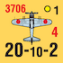
Japanese Navy: Japanese navy units are white with red type.
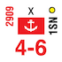
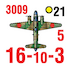
Long Range Bomber (LRB): Only the Allied player has LRB units. LRB units are all air units with ranges of 6 or greater. LRB units have distinct uses in the game and are so cited where appropriate. Note that though LRB units have the same historical unit ID number as their parent normal air unit, they are considered separate units for all game purposes unless specifically noted otherwise. Two of the Allied LRBs in the game have no parent air unit, 20BC and 21BC. These are B29 units and have the ability to conduct Strategic Bombing. Whenever the rules or card text refer to B29 units, they are referring to these two specific units.
Named Location: Cities, with or without intrinsic defense, Resource hexes, and hexes with ports or airfields are named locations.
Naval: Rules references to naval units include carrier units unless specified as non-carrier naval. Exception: Japanese card 17 “Japanese Counterattack at Savo Island” text reference to naval are non-carrier naval.
Navy: All naval, ground, and air units that are Japanese white background and US Blue background units.
Offensive: The play of a strategy card for either as an Event Card (EC) or as an Operations Card (OC) to activate units for operations on the map.
Pre-War Units: Most of the units that start the game on the map (those with set up hexes on the counter) and certain others are denoted by a dot on their counters. These are defined as pre-war units. Pre-war units cannot receive replacements.
DESIGN NOTE: Pre-war units were in two categories: professional soldiers and colonial constabulary troops who were trained for internal security.
Range: Range is the distance between two hexes. When counting range do not include the starting hex the HQ or combat unit occupies, but include the destination hex in the calculation.
Removed From Play Pile: These are cards that once played will not return to play during the current game.
Rounding: Any time the players have to round a number or value that is fractional, round it up, never down.
Strategy Cards: The engine of the game is the play of the strategy cards. A strategy card can be played as an Operations card (OC), which uses the large numerical value at the top of the card(1, 2, or 3) or as an Event card (EC), which uses the written event. If a portion of event text contradicts some rules then the text supercede those rules and no others. Players in the game receive their own set of Strategy cards (one Japanese and one Allied). The Japanese player is the only player that may use the Japanese Strategy cards and the Allied player is the only player that may use the Allied player cards.
Supply Eligible Airfield: A friendly HQ whether it is in or out of supply that can trace a legal supply path (6.21) of any length to a friendly controlled airfield makes that location supply eligible. Supply eligibility for airfields is exempt from overland logistical range considerations, but is held to the one supply eligible port limitation. The term airfield and airbase is used interchangeably in the rules.
Supply Eligible Port: A friendly HQ whether it is in or out of supply that can trace a legal overland supply path (6.21) up to 4 movement points in length OR by sea of any length to a friendly controlled port makes that port supply eligible.
Unplayable Ground Hexside: A hexside where the land mass on one of the adjacent hexes is marked as unplayable on map. No ground movement, or supply can be traced across an unplayable ground hexside.
Unplayable Ocean Hexside: A hexside where the sea area on one of the adjacent hexes is marked as unplayable on map. No naval movement, including Amphibious Assault, or supply can be traced across an unplayable Ocean hexside.
US: This term refers to the subset of Allied units that are American.
US Army: US Army units are Green with black type.
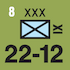
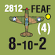
US Navy: US Navy units are blue with black type.
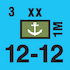
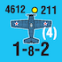
Empire of the Sun has a wide variety of scenarios to play based on the duration of the gaming experience you are seeking. Consequently setup varies depending upon the chosen scenario starting point. The counters are configured around the full Campaign Scenario. All other scenarios are a subset of the full campaign scenario except the new South Pacific mini scenario (17.10). For any given scenario, once the initial setup is accomplished, the units enter play according to the portion of the full campaign game that you are playing.
PLAY NOTE: It is suggested that you segregate counters according to their game turn of entry. Play testing has shown that this is the most efficient way to organize the playing pieces.
The full campaign scenario is 12 turns long; with turn 1 (December ’41) as a special short turn (see rule 17.11 for details). The game can also be started on game turn 2, using an alternative setup, which starts with the January 1942 position. In addition, there are 3 yearly scenarios (1942, 1943, 1944) with alternate setups, and multi-year scenarios that use one of the yearly starts with the victory conditions of one of the later yearly scenarios. The 1943 scenario (17.3) is recommended for tournament and single sitting play situations.
All units in the game that set up at the beginning of game turn 1 (December 1941) of the Full Campaign Scenario have their hex location written on the counter. If the front of the counter has a white triangle in the upper right corner, that unit begins play on its reduced side, where the setup information is located. A unit that has a turn number instead a hex setup location, is a reinforcement unit. A reinforcement unit is slated to enter on the designated game turn, although game play may delay or remove the reinforcement from play. If a unit has a star instead of a number, this means the unit enters through the play of a specific strategy card event. Both sides have a number of markers, some of which are on the map tracks, and others that are not, but are used to denote changes of control or the initiation of particular events during play.
Each scenario, other than the Full Campaign Scenario, has an initial setup for all units listed. If a unit is to be set up at reduced strength it is so indicated, otherwise the unit begins at full strength. The game turn of entry for units that would enter the game beyond the start of a particular scenario is the same as in the full campaign. For example, the 1943 scenario begins on game turn 5. The reinforcements for both sides for game turns 6 and 7 are those indicated on the counters and are the same for the 1943 scenario and the Full Campaign Scenario.
PLAY NOTE: The counter information is configured around the full campaign game. When you play the other scenarios you are essentially entering the war at a particular point in time and continuing along the historical path for as long as the scenario indicates.
Each turn begins with each player bringing in reinforcement units and repairing units with replacements. The Allied player then conducts Strategic Warfare, which includes resolving submarine warfare and strategic bombing. Successful Strategic Warfare reduces the number of cards the Japanese player will receive. The War in Europe (15.5) and the surrender of critical US Allies during a previous turn will reduce the number of cards that the Allied player receives. Based on this, the players are dealt a variable number of cards.
The heart of the game is the Offensives Phase, where the two opponents alternate playing a strategy card, thus conducting an offensive or implementing an event. When the players have exhausted all of the cards in their hand, the game turn enters the Political Phase. During the Political Phase players determine the status of each nation represented in the game to see if they surrender. The game turn ends with a determination of the supply status of units on the board and whether they will or will not feel the effects of attrition. At this time, if this was not the last turn of a scenario, another game turn is begun, or if it is the last turn of a scenario, victory is determined.
PLAY NOTE: If this is the first time that you are reading these rules, then it is recommended that the player segregate the counters into a set that have hex setup locations and those that have a game turn of entry. Take the units with hex setups and place them on the map where indicated. After completing this go to the comprehensive example of play and move the counters according to the narrative. It is our belief that this ‘best practice’ will facilitate your introduction into the game system.
The following sequence represents all of the portions of a single game turn. It is repeated in the indicated order for each game turn until the game ends.
Both players receiver their reinforcements and place them according to rules 10.1 (Reinforcements).
The Allied player places his reinforcements first. He receives delayed reinforcements from the previous game turn due to War In Europe effects (WIE, see 15.0), and either receives the current turn’s reinforcements (in case of no delay) or places them in the delay box due to the WIE or the effect of an event. If the WIE is at level 1 or greater, the Allied player rolls the die for certain classes of units that may be temporarily lost by being diverted to Europe.
Japanese player places his reinforcements second. Japanese reinforcements are never delayed or diverted.
Both players may receive replacements, with the Allied player using his replacements first. Replacements are used to flip reduced units that are in supply to their full strength side, or resurrect units from those eliminated in combat. See Replacements (rule 11.0) for details.
The Allied player conducts submarine warfare and Strategic Bombing. See Strategic Warfare (12.0). The effects of strategic warfare can reduce the number of cards that will be dealt to the Japanese player for the current turn.
The Japanese player receives from 4 to 7 cards, depending on the outcome of Strategic warfare, from the top of the Japanese Card deck. The Allied player receives from 4 to 7 cards, depending on the game turn, War in Europe (15.5), and whether certain Allied nations have surrendered, from the top of the Allied Card deck. Note, however, that the scenario being played may define different procedure for the deal on the first turn of the scenario. If the draw deck has insufficient cards, reshuffle and continue drawing cards.
The player with fewer Strategy cards may play his Future Offensives card as EC Offensive (only) to go first. If he does not, the player with the most Strategy cards goes first (and may play any card). In case of same number of cards, the Japanese player must go first for all game turns in 1941 and 1942, whereas the Allied player must go first for all other game turns; in this case the opponent may NOT use Future Offensives card to go first. (See 7.29)
Players alternate being the Offensives player, playing Strategy cards, either as OCs or ECs to conduct Offensives (the moving of units on the map and the resolution of resulting combats) or implement other game functions through events. The current offensives player must play a Strategy card as OC or EC, use a pass if he has any, designate a card as a Future Offensive card, or discard a Strategy card. If he has no strategy cards left, the role of Offensives player just switches to his opponent.
If the offensives player plays an OC or EC with a logistics value, he conducts an Offensive during which he may activate units to move and attack opposing units. The opposing player is considered the Reaction player and may play Reaction cards and possibly activate and move his units in reaction to the offensive. For full description and sequence of an offensive, see 7.0.
If the offensives player plays a non-military EC, he implements the effect of the event.
After the resolution has been completed, the players reverse roles and the new Offensives player starts with the next play. This segment ends when both players have played all strategy cards in their hands for the turn.
Any countries that fulfill the surrender criteria surrender according to rules in 13.0.
Adjust the US Political Will track for any conditions noted in rule 16.4.
All ground and air units determine their supply state (6.2). If they are out of supply, they are flipped from their full strength to their reduced strength side. Air and Ground units already on their reduced side may be eliminated. Naval units are unaffected by attrition.
If the US Political Will marker is in the Zero (Negotiations) box during this phase, the Japanese player wins the game. If the conditions for automatic Allied victory have occurred, the Allied player wins the game. If it is the last turn of the game, determine the winner as per the campaign or scenario victory conditions for the game that was played. If none of these conditions are true, advance the game turn marker and conduct a new game turn. Flip or remove various game markers as indicated by the rules (e.g., China Offensive conducted to its other side or remove Tokyo Express marker respectively).
Each player has a deck of unique Strategy cards. A player can only draw and play Strategy cards from their own deck, although some cards allow you to force the other player to discard from their hand. Each turn a player draws a hand of 4 to 7 Strategy cards. Players alternate playing strategy cards during the Offensives segment of the Offensives Phase. During their turn, they must play a Strategy card, play one of a limited number of passes, or discard a Strategy card. When both players have played all of the Strategy cards in their hand, the Offensives Phase of the game turn is concluded.
DESIGN NOTE: Strategy cards are the heart of my card driven game system as used in my earlier We The People and For The People designs. The cards are the mechanism through which all movement, battle, and events are initiated during the game.
A Strategy card may be played as either an Operations Card (OC) or as an Event Card (EC), designated a Future Offensive card, or discarded. When played as an OC card, the player may perform one of the following actions:
A. Conduct an OC Offensive (7.0).
B. Conduct a China OC Offensive (13.72).
C. Withdraw an HQ (6.13).
D. Bring a HQ into play from the game turn record track (6.15).
E. Construct a strategic transport route (13.77).
It should be noted that many Events enable Offensives, which are called EC Offensives. OC and EC Offensives follow the same procedures, though they have some differences in actions allowed during the Offensive that are covered later in the rules (7.0).
Played and discarded strategy cards are placed in a separate Discard pile for later reuse unless the card text specifies otherwise. The Discard piles are disclosed information and can be examined by either player. Some cards indicate that if played as an event (EC) they are completely removed from play. Note that a card that is played for an OC whose event text indicates that it is removed after being played as an event is placed in the Discard pile for possible reuse.
The number of cards in a player’s hand is public information, though not the card themselves. The Discard piles and the cards removed play are disclosed information and can be examined by either player. Draw piles cannot be examined by either player.
Each card has an Operations value of 1, 2, or 3. If the card is played to conduct an OC Offensive, Operations value of the card affects the allowed movement range of units (8.0) and the number of units that can be activated (6.3). In case the card is played as an Event that allows an EC Offensive, the Operations value still affects the allowed movement range of units, though not the number of units activated.
The Operations value of a card also affects how many units Reaction player may activate in reaction to the Offensive (7.26) and how much they can move whether the card was played to conduct an OC Offensive or EC Offensive.
All Strategy cards have an OC, and possibly an EC, intelligence value on the card. All Offensives are by default a surprise attack unless the Reaction player alters this condition to an intercept or ambush intelligence condition. The Intelligence value can be changed either by an applicable Intelligence Reaction event card or by intelligence die roll (7.25). Reaction player uses the intelligence value of a card as the base target number for the intelligence die roll. If the card specifies both OC and EC intelligence numbers, the OC value is used if the card was played for OC Offensive and EC value if it was played for EC Offensive.

Each Strategy card has an event. When a player uses a Strategy card as an Event card, the player follows the text of the event. If a portion of event text contradicts some rules then the text supercede those rules and no others. There are four classes of events: Military events, Reaction events, Resource events, and Political events.
Military events (also called EC Offensives) allow the player to conduct multi-battle hex Offensives unlike the one battle hex allowed on an OC play. All military events have a Logistic value. The number of units that may be activated by a military event is based on the Logistics (not the Operations value) value of the event. Military event cards often have a variety of activation, intelligence, and condition text. If a player cannot comply with all of an event’s clauses, except bonuses, the card may be played only as an OC Offensive or discarded, but it may not be used as an Event Card.
Military events can be played as OC cards to initiate an OC Offensive instead of Military event. In this case, rules for OC Offensives apply as normal and all card text is ignored.
Many military events have Offensive restrictions on which named HQs can or cannot be used if the military event is to occur.
If the Intelligence states ‘Surprise Attack’ the Reaction player cannot make an intelligence die roll to alter the intelligence condition (use OC value for special reaction, 7.27), but may still play a Reaction card in order to alter the intelligence condition from Surprise Attack.
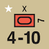
Certain military events come with a special unit (e.g., Slim’s Burma Offensive brings the British 7th Armor Brigade into play). Place the new unit according to the card text.
Many military events have Offensive player special conditions that pertain to the entire Offensive, but do not extend beyond the Offensive unless specifically stated as such. If a portion of an event is mandatory for the event, the card will state it as such, using words such as “only”, (example, “SW Pac HQ only”). Otherwise follow the card text as closely as possible to derive all of the event benefits. Note that a particular situation coupled with a card indication of “no additional effect” still allows the card to be played if either situation can be met.
EXAMPLE: On Allied card 33, the text states, …”this event ends a US inter-service rivalry. Flip the US Inter-service rivalry marker to its Strategic Agreement side. If the US Inter-Service Rivalry marker is already on Strategic Agreement side there is no additional effect.” In this example, the event text has been followed since the inter-service rivalry component can be met in either status (Inter-service rivalry or Strategic Agreement). Another example is in Japanese Political card 34, which states,”…no additional impact if Inter-Service rivalry is already in effect, Draw one Strategy card.” Effectively, this card can be played to draw a card regardless of the US inter-service rivalry status.

When a player is in the role of a Reaction player, the only strategy cards that may be played are those that state in their title they are a Reaction event. Only the player currently cast in the role of Reaction player may play Reaction cards. A Reaction event may be played in response to an Offensive after the Offensives player has completed moving all offensive units, provided there are one or more declared battle hexes or the text of the card indicates the card may be played otherwise. A Reaction player is limited to playing a maximum of three Reaction events in response to a specific offensive, not per battle within that offensive. There are five general categories of Reaction events: intelligence, attack (submarine, kamikaze, and skip bombing), counteroffensive, weather, and personage.
Intelligence reaction card may be used to change intelligence condition as per 7.25. A player may play more than one Reaction event during an Offensive. If both intercept and ambush intelligence conditions are possible as a result, the intelligence condition is ambush.
Attack Reaction cards indicate the potential for some amount of additional damage the Offensives player may take due to a submarine, kamikaze, or skip bombing attack. Follow the text instructions on the individual card. More than one Attack Reaction cards can be played during an offensive.
There are several general types of Reaction events that enable the Reaction player to activate more units in reaction than would be normally possible and alter the intelligence condition like Intelligence reaction cards. Counteroffensive cards have a logistics value, which the Reaction player uses for the number of units that can be activated, although the Reaction player still uses the Offensive card’s OC value for determining unit movement points. Only one Counteroffensive event may be played during an offensive.
There are several weather Reaction events that cancel Offensives that activate units (with or without battle hexes), and which may be played after Offensives player movement and before an intelligence die roll. Canceling an Offensive due to weather causes the Offensives player to place the moved units back at their starting locations, ending the Offensive. The cancelation of the Offensive also prevents any event bonuses or reinforcement units from entering play. The cancelled Offensive card is considered discarded, not played, so it is placed the discard pile and not removed from play even if its event calls for removal from play. The Reaction player may not play any other events (such as Reaction cards or Attack cards) in conjunction with a Weather card. Any Amphibious Shipping Points that the Offensives player intended to use for the cancelled Offensive are not considered used and are still available for use during the current game turn. All Weather cards are removed from play if played as an event.
There are a few events that focus on the impact of a famous personage (e.g., Gandhi, Wingate). Follow the text instructions to resolve these Reaction cards.

Only the Offensives player may play Resource events. Resource events give the player new units, capabilities, or replacements. If a Resource event gives the player a reinforcement unit, it is placed on the map using the same restrictions as for units arriving during the Reinforcement phase. If the event states that the replacements must be used immediately, then the player places the replacements as if it were currently the replacement phase, with all the same restrictions. Sometimes the card text specifies a choice to either use the replacements immediately or save them for future use. If the player chooses to save them, record the amount on the strategic resource track with the appropriate marker. If for any reason, the Offensives player cannot fulfill the conditions under which the reinforcement unit is supplied, the unit is lost. Similarly, if for any reason the Offensives player cannot use or save all or some of the available replacements, unused replacements are permanently lost.

Political events are those that move a marker on one of the game tracks. There are five kinds of political events: China OC Offensives, India Stability, War In Europe, US Political Will changes, and Inter-Service Rivalry. Each of these types of events specifies which game track is affected and the direction and distances the marker for that track is moved.
Many events state that a player draws a strategy card if the event is played. A player never draws a card if the Strategy card played is played as an OC. A draw may only occur if a Strategy card is played as an Event. A player may not use a card just drawn during the current offensive. A player may never draw more than three cards as a result of instructions on a card played as an Event to draw a Strategy Card during any Offensives phase. Once a player has drawn three cards, all additional events played for the remainder of the current Offensive phase ignore further card draws.
PLAY NOTE: It is suggested that the players use the Card Max counters on the Strategic Record Track as a reminder of how many cards have been drawn during the turn.
A large number of the events in the game specify that they are removed from the game. A card that is used as an Event and that has this provision is removed from the game after its initial use and cannot be used again during the remainder of the game for any purpose. If the card is played as an OC or a discard it is not removed from the game.
Two cards, Tojo Resigns and Soviets Invade Manchuria, are Special Event cards and must be played during the Offensives phase of the turn in which they are drawn as an OC or EC. Thus, they may not be played as a Future Offensive or voluntarily discarded. If a Special Event card is drawn on a game turn prior to when it must be played as EC (e.g., Tojo Resigns) or its precondition is not yet met (Manchuria), the card may be played as an OC and causes a reshuffling of the deck at the end of the current game turn to re-include the card and all of the other cards in the discard pile (not those removed from play).
If a Special Event is discarded due to the play of another event and the criteria for the event are fulfilled, the Special Event occurs the instant the card is discarded. If the criteria for the Special Event are not fulfilled, the discard pile is reshuffled just like the card had been played as an OC.
Supply and activation are key concepts for units’ actions in EotS. To move or attack during an offensive or as a reaction to an offensive, a unit needs to be activated by an in-supply HQ. Inactivated units defend in battle if attacked, but cannot initiate attacks or move during an Offensive. One precondition (unless an EC specifies otherwise) for activation is that the unit is currently in supply. In addition to preventing activation, lack of supply may also cause attrition (6.24), prevents units from receiving replacements (11.0) and prevents air and carrier units from exerting ZOIs (6.4). However, out-of-supply units do retain their combat strength. Supply status is continuously evaluated, so units may fall in and out of supply as other units move and affect the supply lines. However, once a unit has been activated for an Offensive, it automatically remains in supply until the end of the Offensive even if it moves to a location where it would not be in supply.
Both activation and supply are traced from an HQ, though they can be traced from different HQs. The criteria for tracing activation and supply are somewhat different with supply tracing being more restrictive (see 6.2 and 6.3) with the range of HQ being the maximum path length. In addition to these traces, intelligence and reaction determination use direct hex distance from the HQ as criteria regardless of blocking terrain or AZOIs.
Aircraft Zones of Influence have a major impact for tracing supply and activation. They also affect reaction possibilities and amphibious movement of ground units.
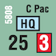
Headquarters (HQs) represent command infrastructure and are treated as ground units. Each side begins the game with a number of HQs in play and can receive new HQs as reinforcements or through card events. Most HQs cannot be eliminated permanently, as they represent a ubiquitous command infrastructure. HQs do not move per se, but can be repositioned voluntarily (by the play of an OC) or involuntarily due to opposing actions. A few of the Allied HQs cannot be returned to play if voluntarily or involuntarily removed and are indicated by a dot (Allied ABDA and Malaya HQs). HQs have two values: Command Range and Efficiency Rating.
Command Range: An HQ’s command range is used to determine the range at which it can supply units, trace activation for Offensives and Reaction moves, and where reinforcements and replacements can be placed. It is also used for determining whether the HQ can react to an offensive and if units that are out of supply can sustain themselves on the map if they are out of supply.
Efficiency Rating: An HQ’s efficiency rating is used in conjunction with an OC value or a Logistics value to determine the number of units the HQ can activate during an Offensive or Reaction. HQ’s efficiency rating can be modified in three situations: US or Joint HQ that cannot trace a supply line, in the manner HQs usually trace supply lines, to the East map edge Ultimate Supply Source has -1 modifier to its efficiency rating (to a minimum of 0) (6.25). Similarly, Japanese HQ that is used to activate units in Burma, Ceylon, or Northern India when the Bridge over Kwai River has not been built and the Japanese do not control Rangoon has -1 modifier to its efficiency rating (13.79). Under certain circumstances the Bridge over the River Kwai event can add +1 to a Japanese HQs efficiency rating (13.79).
Stacking: HQs do not count toward stacking limits, but there may never be more than one HQ (of either side) in a hex at a time. HQs must always be located in a port hex.
All HQs are limited to which unit nationalities they can activate and supply. Japanese HQs can activate any Japanese unit. Allied HQs come in one of three types: US, Commonwealth, and Joint. The Allied HQ National Command Chart denotes which units can be activated and supplied by a particular Allied National HQ. All Allied HQs and units are friendly to each other and enemy to all Japanese HQs and units. All Japanese HQs and units are friendly to each other and enemy to all Allied HQs and units.
| HQ Nationality | US Units | Commonwealth Units | Chinese Units | Dutch Units |
|---|---|---|---|---|
| US | Yes | No | Yes | No |
| Commonwealth | Air Units Only | Yes | Yes | No |
| Joint | Yes | Yes | Yes | Yes |
HQs cannot move per se, but they can be voluntarily withdrawn from the map as the complete play for any OC. Nothing can stop the voluntary withdrawal of an HQ and the HQ does not need be in supply. The withdrawn HQ is placed on the game turn record track for re-entry on the next game turn. An HQ on the game turn record track returns to play during the reinforcement phase of the next game turn as a normal reinforcement and cannot be delayed.
If an HQ finds itself at the conclusion of an Offensive or national surrender in an opposing controlled hex, the HQ is involuntarily removed from play. An HQ that does not have a dot on it is placed on the game turn record track and returns to play during the reinforcement phase of the next game turn as a normal reinforcement that cannot be delayed. If an HQ with a dot (ABDA or Malaya HQs) is removed from play voluntarily or involuntarily it is permanently removed from play.
An HQ on the game turn record track normally returns during the reinforcement phase of the next game turn. A player can bring HQs on the game turn track into play earlier by playing an OC of any value and placing the HQ in any friendly controlled port where the HQ is in supply. The returning HQ is placed in the Japanese Home Islands for the Japanese, or in Australia, Oahu, or India for the Allies. The return of the HQ is the sole action for the play of that card.
PLAY NOTE: An HQ that returns to play as a reinforcement can be placed in any friendly controlled port where it would be in supply, whereas a returning HQ is geographically restricted to where it can return. Consequently, to move an HQ into a more forward position usually requires it to be brought back into play as a reinforcement vice the restrictions of a returning HQ.
General concepts: Both HQs and units must trace supply lines to be in supply. For HQs, a supply line of any length is traced from an Ultimate Supply Source (map edges for the Allies; Japanese controlled city hexes in the Home Islands for Japan (6.22); to the port in which the HQ sits. A supply path that traces from an ultimate supply source to an HQ can use multiple ports to enter, continue across land hexsides, and exit by port without overland or number of ports used restrictions.
Units, by contrast, trace supply lines from an in-supply HQ to the hex they occupy, limited by the HQ’s range. Air or carrier unit ZOI are assumed to exist when checking if a unit is in supply (see 6.4). As the rules below explain, the supply line may not traverse certain hexsides. Although there are a number of restrictions, in general units may trace supply
from the supplying HQ by sea to coastal hexes the units occupy;
overland from the supplying HQ to the units; or
through a combination of land and sea hexsides from the supplying HQ to the units, provided that the sea component is traced through only one supply eligible port other than the hex the HQ occupies (which will always be another port hex) or potentially the unit activating is located in.
In addition, there are further restrictions for units tracing the last portion of their supply line overland (cited later in this section: Overland Logistical Range).
Supply Eligible Port: A friendly HQ whether it is in or out of supply that can trace a legal overland supply path (6.21) up to 4 movement points in length OR by sea of any length to a friendly controlled port makes that port supply eligible.

Supply Line: A unit is supplied if an unblocked hex path can be 2617 E traced from a supplied appropriate (6.12) activating HQ to the unit and the path length does not exceed the HQ’s range. A supply line can be traced across any hexside except the following:
An unplayable hexside (see map).
A water hexside of an un-neutralized enemy ZOI hex.
Any land hexside of a non-port coastal hex that the path has entered across a sea-hexside.
Any all sea hexside from a non-port coastal hex that the path has entered across a land hexside.
A land hexside of any hex occupied solely by an enemy ground, HQ, or air unit. Naval units have no effect on this case.
Any sea hexside of an enemy controlled port hex that the path has entered across a land hexside.
Any land hexside of an enemy controlled port hex that the path has entered across a sea-hexside.
Overland Logistical Range: If the last hexside crossed when tracing a supply line is a land hexside, the hex containing the unit drawing supply must also be within 4 MPs of ground movement (8.42) of:
The supplying HQ or
Kunming, if an active supply source (13.75) or
A Supply Eligible port (6.0).
For purposes of this check only, a hexside with strategic transport route (8.44) costs 1/2 MP if both of the hexes are unoccupied OR friendly occupied (with or without the presence of an enemy unit). A hex with a No Transport Route marker (see 13.77) is treated as if it had no transport route connections to any of the adjacent hexes.
Port Limitation: A supply line may include no more than one supply eligible port where the supply line switches between sea and land or vice versa, not including (i) the port in the HQ’s hex; or (ii) any port the unit occupies.
PLAY NOTE: Note that the supply line itself may cross far more terrain overland than the 4 MP limitation and does not have to pass through the supply-eligible port required, there just has to be a valid port within the range. Also, note that if the last hexside crossed was

EXAMPLE: Japanese units B, C and D trace supply by land to the South HQ. All are within 12 hexes of the South HQ and 4 MPs of a Supply Eligible Port. Since the Transportation hexes in Jarhat and Ledo have not been constructed yet (13.77), unit A is out of supply since it is 5 MPs from Rangoon to its location.

EXAMPLE: The five Japanese units marked A-E are tracing supply. The shaded hexes indicate non-neutralized Allied Air ZOI, which blocks supply paths by sea. Unit A is out of supply since it is more than 4 MPs from a Supply Eligible Port. All other units are in Supply. Note that Allied Air ZOI does not block land supply paths which allows unit C to trace to the adjacent port hex.Units D and E are on coastal hexes which can trace a supply path by sea back to the HQ. by sea, the overland limitation does not apply at all. This allows units in a location that can be supplied by sea more freedom of operation than units tied to overland supply network.
DESIGN NOTE: The overland logistical range requires that units operate relatively close to a logistical supply node represented by a port. The difficult jungle and mountain terrain in the many of the areas depicted in EotS severely limited the possibilities of overland supply. The overland supply lines in EotS should not be considered literal lines along which supply flows but rather as areas of HQ’s logistical ability and responsibility. In practical terms, units in such a situation would receive their supplies from nearest port to which the supplies are shipped to. Thus, the 4 MP limitation is enforced to nearest port and not to the HQ.
Important: During an Offensive, any activated unit remains supplied until the end of the Offensive.
Kunming: In some cases, Allied units can trace supply directly from Kunming instead of an HQ (see 13.75).

Take the situation where the Allies have the Malaya air unit in Singapore and the Japanese have air units in Singora, Miri, and Tjilatjap. All of the Japanese air units are drawing their supply from the South HQ in Saigon and the Malaya air unit is drawing its supply from the Malaya HQ in Singapore. The Japanese Saigon HQ has an uninterrupted LOC to Japan. The Japanese air unit in Tjilatjap is OOS if the Malaya air unit has a ZOI. The Malaya HQ has an LOC (putting the Malaya air unit in supply) if the Malaya air units ZOI puts the Japanese Tjilatjap air unit OOS, but does not have a LOC if the Japanese air unit in Tjilatjap has a ZOI.
The Malaya air unit and the Japanese Tjilatjap air units ZOI are therefore mutually exclusive. Using the procedure above, if the Japanese air units ZOI is removed, the Malaya HQ has an LOC that is dependent on the Malaya air units ZOI and with the removal of the Japanese ZOI the Malaya HQ is in supply. Therefore the Malaya air unit is in supply and the Japanese Tjilatjap air unit is OOS.
Taking the same example and moving the Japanese air unit from Tjilatjap to Batavia, changes the outcome. In this instance when all the air units have a ZOI, Batavia is in supply (not dependent on whether the Malaya air unit does or does not have a ZOI), so Malaya is OOS and the Malaya air unit then loses its air ZOI.
In rare local situations where the ZOI of Japanese and Allied air units mutually render one another unsupplied (that is absent the ZOI projected by the Allied air unit, The Japanese player’s air unit would be in supply and thus exert a ZOI; but that Japanese ZOI, if projected would cut supply to the Allied air unit in question), only Allied air units are considered to exert a ZOI for supply status determination.
PLAY NOTE: The best method to determine whether the situational placement of air ZOIs creates this situation is to do the following. Assuming that all of the air units are in range of an appropriate HQ, look at the situation with all of the air units in question projecting their ZOI. If any air units ZOI is contingent upon an enemy air unit not having a ZOI and vice versa then take away the offending Japanese air ZOI. If the Allied air unit is in supply then the Japanese air unit is OOS. If not, then this situation does not apply.
An HQ is in supply if an unblocked supply line of any length can be traced from an appropriate Ultimate Supply Source (6.22) to the HQ. The types of hexsides that a supply line cannot be traced across (6.21A) apply to Ultimate supply sources tracing to an HQ, however this supply path can use multiple ports to enter, continue across land hexsides, and exit by port without overland or number of ports used restrictions.
Ultimate Supply Source paths are used to determine the supply status of HQs. Each hex on the East, South, and West map edges is an Allied ultimate supply source. Each Japanese controlled city hex in the Japanese Home Islands is a Japanese Ultimate Supply Source.
Play of the China Airlift (Allied #17) card establishes a supply line between Kunming and any Allied controlled supply-eligible Northern India airfield (Jarhat and Dacca). This supply line exists as long as the Allies control a supply-eligible Northern India airfield and need not be traced as specified in 6.21.
Play of the Big Tokyo Express Operation (Japanese Tokyo #28) or the Tokyo Express (Japanese #44) card allows Express the Japanese player to place the Tokyo Express marker in play to create a temporary supply line between any one in-supply Japanese HQ and any one hex within range of that HQ for the rest of the turn. Air, ground, and naval units, not HQs, in the hex with the Tokyo Express marker are in supply for all game purposes to include re-establishing a ZOI. Nothing can sever a Tokyo Express marker supply.
The Tokyo Express marker remains in the hex it was placed into until one of three events occurs: (1) the hex becomes Allied controlled; (2) another Japanese card is played that moves the Tokyo Express marker to another location; or (3) the game turn ends. There can never be more than one Tokyo Express marker in play at any time. Tokyo Express does not affect the prerequisites for activating units.
During the Attrition Segment, perform the following steps in order for both sides air and ground units simultaneously. HQs and Naval units are not affected by attrition:
Eliminate all reduced or single step air or ground units that are unsupplied, are not in a hex affected by an Emergency Supply Route (6.23), and are out of range of any friendly supplied or unsupplied HQ. For this check, enemy units, opposing ZOI, and unplayable hexsides do not block the path between the HQ and the unit.
Flip all full strength air and ground units that are both unsupplied and are not in a hex affected by Emergency Supply Route (6.23), to their reduced side.
Attrition is calculated and applied simultaneously, so it is possible that opposing units can mutually attrite each other. Note that units with only one side (e.g., Dutch Regiments, US Marine Wake units, CVL Hermes) are considered to be on their reduced side.
Any in supply Joint or US HQ that cannot trace a valid supply line from the East map edge Ultimate Supply Source (see 6.21; 6.22) has its efficiency rating reduced by 1 (a zero rating is possible).
A unit must be activated to move (exceptions: Emergency Naval Move, Emergency Air Move, Ground Disengagement, and Retreat) or to initiate attack. For a unit to be activated it must have an activation path from the HQ being used for offensive or reaction purposes, and be in supply, possibly from Kunming or a different HQ than the one used for the activations (see 6.2).
An activation path is traced from the activating HQ to the unit being activated and can be traced across any hexside except the following:
A water hexside of an un-neutralized enemy ZOI hex.
Any land hexside of a hex occupied solely by an enemy ground or air unit.
Activation path length in hexes may not exceed the Command Range of HQ being used to activate units.
Unlike a supply line (6.21), an activation path can be traced across unplayable hexsides and can switch from land to sea without the need for friendly ports.
Only a single HQ per side can be used to activate units for one offensive and the number of units that may be activated depends on the OC value or logistics value of the card used and the Efficiency rating of the HQ (see 6.11).
All in supply air and carrier units project a 2 hex Zone Of Influence (ZOI) The ZOI is neutralized if an opposing Zone Of Influence is projected by non-LRB unit into the same hex. LRB units project ZOI like other air and carrier units, but cannot be used to neutralize enemy ZOI. Air or carrier unit ZOI is assumed to exist when checking if that unit is in supply.

EXAMPLE: Both the Japanese and Allied Air ZOI are shown. The hexes where both sides have an Air ZOI are shown as neutralized.
Out of supply air or aircraft carrier units do not have a ZOI and cannot neutralize enemy ZOIs. The supply status for determining whether a unit is in supply is determined anew every time the ZOI might have an effect (6.2). Thus, units may go out of supply and lose their ZOI (or vice versa) in middle of enemy’s move. Note, however, that once a unit has been activated for an offensive, it will remain in supply until the conclusion of the offensive regardless of any other factors.
An Air ZOI from an in-supply unit is in effect at all times when the unit is stationary and during non-strategic moves (thus moving air units and carriers neutralize opposing ZOIs as they go). An air or carrier unit using strategic move loses its ZOI during the movement and regains it after it has completed the move.
A ZOI that is un-neutralized impacts several game functions:
No unit may enter or exit a ZOI when conducting strategic movement (8.23, 8.33).
Ground units conducting amphibious assault may not enter or exit a ZOI (8.44).
A ZOI blocks an HQ activation range path that enters or exits the ZOI across an all water hex side (6.3).
A ZOI blocks a supply path that enters or exits the ZOI across an all water hex side (6.21).
In addition a ZOI has two effects even when neutralized:
Offensive units entering, exiting, or moving within reaction side’s ZOI gives a -2 modifier to intelligence roll (7.25).
Offensives unit making an amphibious landing within a ZOI of the Reaction player may allow special reaction (7.27).
A ZOI does not affect:
Ground movement from a land hex to another land hex across a land hex side (8.42).
Naval or air unit movement other than strategic movement (8.21, 8.31).
An HQ activation range path that enters or exits a hex across a land hex side (6.3).
A supply path that enters or exits a hex across a land hex side (6.21).
An HQ range when used to maintain reduced units during the Attrition phase (6.24).
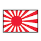
The last player to have a ground unit enter or pass through a hex controls the hex. Ground units that enter an unoccupied hex via ground movement gain control immediately. Ground units that enter a hex via amphibious assault (using an ASP, organic naval, or barge transport) and are not eliminated or forced to retreat in battle gain control of the hex just prior to post battle movement.
For example, during an Allied Offensive, Japanese controlled Guadalcanal (4423) is declared a battle hex and the Allies win, eliminating all Japanese ground units on Guadalcanal. The Allies have in the Guadalcanal hex US CA Northampton and 1st Marine Division, and on Espiritu Santo (4825) the 13th AF non-LRB air unit that participated in the battle. Just prior to post battle movement, the 1st Marine Division gains control of the Guadalcanal hex, making the hex legal destination for CA Northampton and 13th AF during the post battle movement.
Offensives are the core of the game. An Offensive starts with the current Offensives player playing a Strategy card as either an Operations Card or an Event Card with logistics value. Offensives allow a player to move a variable number of units that begin within range of one HQ and to declare battle for particular hexes at the conclusion of movement.
DESIGN NOTE: There are differences, noted throughout the rules, between conducting an Offensive using OCs and ECs. An OC represents a localized action conducted with local forces. Consequently an OC Offensive can be used to declare only one battle hex. Since an OC Offensive uses less high-level command resources, it is considered more operationally secure and less likely to be discovered and intercepted by the enemy. An EC Offensive is larger in scope with superior logistic preparation. An EC Offensive can encompass any number of declared battle hexes, but the increased requirement for coordination makes operational security more challenging and is more likely to tip off the opposition.
When an Offensive is declared, players conduct the following steps in sequence.
Step 1. The Offensives player activates supplied units within activation range of an eligible HQ (7.21). Any Offensives bonuses from the EC card that apply prior to movement are implemented (including receiving any reinforcements)
Step 2. The Offensives player moves activated units (7.22, 7.23).
Step 3. The Offensives player declares battle hexes (7.24).
Step 4. Reaction player may cancel the Offensive using a Weather Reaction Event or cancelling a unit activation from a reaction card event text (e.g., Personage 5.32 E). If the Offensive is cancelled, place all units to their starting location, remove event reinforcements, remove event replacements, and place the used Offensive card in the discard pile; return any ASPs used during the offensive; the offensive is concluded (7.28).
Step 5. Implement possible event bonuses from Offensive player’s EC card that apply prior to reaction.
Step 6. If Special Reaction is possible, Reaction player may roll to attempt creating additional battle hexes via Special Reaction (7.27). If, after this, no battle hexes were declared nor created due to Special Reaction, Reaction player may play any applicable Attack Reaction cards, then skip to Step 13, Post Battle Movement.
Step 7. The Reaction player attempts to change the Offensive’s Intelligence Condition by playing an appropriate Reaction card or, as an alternative, making an intelligence die roll (7.25). If, at the conclusion of this Step, the Offensive’s Intelligence Condition is Surprise Attack, skip to Step 9.
Step 8. The Reaction player activates and moves units to participate in battle hexes either declared by Offensives player or created by Special Reaction (7.26).
Step 9. Reaction player may play any Attack Reaction cards.
Step 10 Implement any offensive bonuses that apply after reaction. Implement any Attack Reaction cards that apply prior to battles.
Step 11. Players resolve all battles (7.28).
Step 12. Implement any Attack Reaction cards that apply after battles.
Step 13. Players conduct post battle movement (9.6). Reaction player first, followed by the Offensive player.
Step 14. Conduct all necessary emergency naval movement (8.22) and emergency air movement (8.32).
The Offensives player selects the in-supply HQ chosen for the offensive. A player may activate a number of units equal to the efficiency rating of the HQ being used to conduct the offensive PLUS either the OC value or the Event logistic value. The efficiency value of any HQ may be modified by lack of connection to the Eastern map edge for US and Joint HQs (6.25) or for lack of CBI infrastructure for Japanese HQs (13.79). The units to be activated must be in supply. In order to be activated, an activation path has to exist from the HQ used to the unit being activated (6.3). Inter-Service Rivalry (14.0) can also limit the units eligible to be activated.
Allied HQs have specific nationalities they can activate, unless excepted by an events card text: US (e.g., Central, South (Ghormley or Halsey), and Southwest), Commonwealth (e.g., Malaya, SEAC), or Joint (e.g. ANZAC, ABDA). The Japanese have only one type of HQ.
A. US HQs can activate US units (both Army and Navy) and Chinese units.
B. Commonwealth HQs can activate Commonwealth, Chinese, and US Air units (both US Army and Marine air units).
C. Joint HQs can activate any Allied unit. Note: Only Joint HQs can activate Dutch units.
D. Japanese HQs can activate any Japanese unit.
The distance Offensive or Reaction units may move is equal to the OC value of the Offensive card being played times the unit type’s base movement allowance (naval = 5, ground = 1, air = normal/ extended range). Exception: if the card is played as an EC, the event may allow unit movement greater than the OC value of the card and takes precedence.
Air units are further restricted in movement as they must end every “leg” of their movement in a friendly airbase (8.31). Naval units are limited in what hexes they can end their movement in (8.21).
When moving units during an Offensive, each stack of units should be moved to completion before another unit or stack is moved. Units may not be picked up or dropped off during movement. The major impediment to movement during an Offensive is the location of un-neutralized opposing air Zones Of Influence (ZOI). Rule 6.4 describes the ZOIs in detail and should be carefully considered when planning the move sequences during Offensives.
PLAY NOTE: Moving air and aircraft carrier units first to locations where they neutralize opposing air ZOI enables ground units to move with less restriction. Moving ground units with an aircraft carrier neutralizes opposing ZOI as the carrier is moved. Following the opposite sequence could prevent amphibious assaults or strategic movement from occurring because they could not move into unneutralized opposing ZOI.
After all Offensive unit movement, the Offensives player declares which hex(s) are battle hexes. Any hex that contains Offensive and Reaction units (including HQs) must be declared a battle hex. Hexes that contain Reaction units only, but are in range of activated Offensives player air and carrier units that are not taking part in other battles may be declared battle hexes. Non-coastal hexes in China may not be declared as battle hexes.
On the play of an OC a player can declare one battle hex. Note that more than one battle may occur on the play of an OC due to possible Special Reactions (7.27) by the Reaction player. On the play of an EC a player can declare as many battle hexes as desired. For each declared battle hex, the Offensives player must state which units will participate in the battle for that hex. No unit may participate in more than one battle per Offensive (however, as noted below, a unit may be required to switch battle hexes in certain circumstances as a result of Special Reaction). All units in a battle hex must take part in that battle.
Every carrier unit that did not end its move in a friendly port must be either declared to participate in a battle hex within its range or to cover a friendly ground unit making an amphibious assault on an empty enemy controlled hex. If the assigned covered hex becomes a battle hex via Special Reaction, the carrier must take part in that battle. Any carriers that ended their move in a friendly port hex and any activated air units that are not participating in a declared battle hex may (but are not required to) be assigned to cover a battle hex within their range the same way.
The intelligence condition for an Offensive is the same for all battle hexes during that Offensive. This procedure is not conducted individually for each battle hex. Consequently, if the reaction player is successful in changing the intelligence condition, this affects all declared battle hexes for the offensive.
A. The intelligence condition of the Offensive is by default Surprise Attack.
B. The Reaction player must attempt to change the intelligence condition by doing one of two things. First, the Reaction player could choose to play a Reaction card that specifies the intelligence condition as Intercept or Ambush. The play of a Reaction card supersedes the intelligence condition specified by a Strategy card. If more than one Reaction card is played and both intercept and ambush intelligence conditions are specified, the intelligence condition becomes ambush.
C. Second, if (but only if) the Reaction player did not play a card and the Offensive card did not specifically call for surprise attack, the Reaction player must make an intelligence die roll. An intelligence die roll can change the intelligence condition from Surprise Attack to Intercept (never to Ambush, which can only be done through the play of a Reaction card). Once the Reaction player makes an intelligence die roll, it precludes the ability to play a Reaction card to change the intelligence condition unless the Reaction card text specifically allows it. The Reaction player may only make one intelligence die roll per Offensive.
D. The Intelligence die roll procedure is as follows. The card used to initiate the Offensive has an OC and possibly an EC intelligence value. If the Offense was initiated by the OC value of the card, then use the OC intelligence value. If the Offensive was initiated by an EC Offensive, then use the EC intelligence value. If the die roll is equal to or less than the appropriate Offensive card intelligence value (modified, if applicable per 7.25.E below), then the die roll is successful and the intelligence condition for the Offensive is intercept. If the die roll is greater than the specified value, then the roll is not successful, and the intelligence condition for the Offensive is surprise attack.
E. There is one way in which the intelligence die roll may be modified. If at any time during the movement of any of the Offensives player’s units, those units move into, through, or exit an opposing air ZOI (whether neutralized or not), the reaction player subtracts 2 from their intelligence die roll. However, an unmodified die roll of 9 is always considered a failed die roll and a surprise attack result, regardless of any die roll modifier.
PLAY NOTE: Air/Carrier units that are activated within an enemy ZOI that do not move and declare a battle hex from that location do not trigger the intelligence die roll modifier. It is only triggered if a ZOI has been entered, moved into, through or exited.
If the intelligence condition is Surprise Attack there is no Reaction move and the Offensives player immediately resolves all battles initiated by the Offensive after the Reaction player has had an opportunity to play attack reaction cards. If the intelligence condition is Intercept or Ambush, the reaction player may designate one (and only one) in-supply HQ as the reacting HQ, which may activate units to react to battles. There must be at least one declared battle hex within range of this HQ (this range cannot be blocked by any means); if there are no such HQs, no reaction is possible. Any units the reacting HQ activates may join any declared battle that they can reach, including those that are out of range of the reacting HQ.
The Reaction player may activate a number of units equal to the HQ’s efficiency rating plus the defender’s logistics value. If a Counteroffensive Reaction card was played, the defender’s logistics value is the Counteroffensive’s logistics value. Else, it is the OC value of the Offensives player’s Strategy card (regardless of whether it was played as an OC or an EC). The Reaction HQ may only activate units that are in supply and have an activation path from the HQ. The activation path for reaction can be traced into (and through) a declared battle hex even if it contains enemy units.
All units that the Reaction player activates must participate in a declared battle. Any unit that cannot be moved such that it can participate in a battle may not be activated. Reaction units that are in a battle hex may be activated. Reaction player is not obligated to activate any units just because the intelligence condition is Intercept or Ambush. All restrictions that govern Offensive activation apply to Reaction activation.
No more than one ASP may be used during Reaction movement. The use of Organic Naval Unit Transport (8.46) is not constrained during Reaction movement. The Reaction player may not use strategic movement. Activated air and carrier units may use Reaction movement to leave a battle hex before combat is resolved, but if they do so, they must still participate in the battle in the hex they departed from. Other units that start in battle hex must remain in the battle hex even if activated.
If an opposing ground unit ends its Offensive move in an unoccupied Reaction player controlled city, Resource hex, port, or airfield hex that is within range of a Reaction HQ and in a Reaction aircraft Zone Of Influence (whether neutralized or not), the Reaction player may attempt a Special Reaction on such hex(es). To make this Special Reaction the Reaction player must make a successful intelligence die roll (play of a Reaction card cannot be used; however the -2 ZOI modifier applies). If the roll is successful, the hex is declared a battle hex. This can occur whether the Offensives player declared a battle hex (or hexes) or not. If more than one hex is eligible for Special Reaction, separate roll must be done for each hex.
Hexes entered solely via ground movement alone are not eligible for Special Reaction. If a Special Reaction possibility occurs on a surprise attack EC event, use the OC intelligence value. Special Reaction by itself does not change the intelligence condition.
Any air and carrier units assigned to cover the landing where the new battle hex was created take part in that battle. If the newly created battle hex contains an air or carrier unit that was declared to take part in another battle within range and the enemy reacts into the hex then these air/carrier units will switch and resolve combat in the battle hex they occupy. Reacting units that attack this hex at range do not cause this to happen, there must be a reaction unit physically in the newly created battle hex.
It is possible that if the unit’s original battle hex has no other participating offensive units then there is no combat resolution in that location, but it still remains a battle hex and any units committed to that battle hex remain committed to a battle hex without combat resolution. Per the rules any reaction units in the original battle hex cannot participate in any other battles although if activated they can conduct Post Battle Movement. This situation where a declared battle hex does not experience combat resolution can occur in other ways such as a successful submarine attack eliminating all offensive units prior to combat resolution.

EXAMPLE: The US SF Brigade uses Amphibious Assault to enter Hollandia and the 5th non-LRB AF supports the SF Brigade landing. The next unit moved is the CV Enterprise that moves into the Hollandia hex and declares it is attacking the Japanese air unit at two hex range in Biak. After offensive movement the Japanese using special reaction with the air units ZOI successfully creates a battle hex in Hollandia, then successfully changes the intelligence condition to intercept. During reaction activation/ movement the Japanese air unit activates but remains in Biak, while the BB Yamato enters Hollandia. The CV Enterprise now switches to the Hollandia battle hex and in conjunction with the 5th AF air unit conducts air-naval combat with the Yamato. The Yamato scores 18 hits and flips the CV Enterprise and the Allies score 11 hits, insufficient to damage the Yamato. As the Yamato’s strength of 18 equals the Allied 18 factors, the invasion fails. Biak remains a battle hex precluding the Japanese air unit from participating in another battle. All activated units then conduct Post Battle movement.
Each battle is resolved as per the requirements of rule 9.0. After this, all activated units, Reaction player first, conduct post battle movement (9.6). At this time the offensive is concluded and the other player plays a Strategy card or the Offensives phase is concluded if both players are out of cards.
PLAY NOTE: Remember, even units that do not participate in battles can conduct post battle movement.
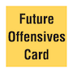
Once per game turn each player may designate one Strategy card to be held over for a Offensives Offensives Card Card future game turn to conduct an Offensive, event, or a reaction. A player may never have more than one card designated as a Future Offensives card at any given time. A player cannot designate a card as a future offensive card if one is currently designated. To designate a Future Offensives card, the player, as the play of a strategy card, takes the card and places it face down next to the map and places the Future Offensives marker on top of the card to indicate its status. This is that player’s action and play alternates to the other player. A Future Offensive card is not counted for hand size purposes or initiative purposes.
If, at the start of the Offensives phase, a player has fewer cards than the opposing player, that player can win the initiative and go first by playing the Future Offensive card as the first card. In this case, the Future Offensive card must be played as an EC Offensive.
A Strategy card cannot be played as a future offensive in the same game turn in which it was designated as a Future Offensive card, nor as the last card played by the owning player during an Offensives Phase. A Future Offensive card cannot be discarded to fulfill an event discard requirement. Other than these restrictions, a Future Offensive card may be played any time a player could normally play a strategy card.
A player may keep the same Future Offensive card for multiple turns. The only drawback of doing this is that another card cannot be designated as a future offensive card as long as the current future offensive designated card has not been used. Note: Any card except Special Event cards Tojo Resigns and Manchurian Offensive may be played as a Future Offensives card.
The distance a unit may move during an Offensive or Reaction is based on the unit type’s base movement allowance times the OC value of the Offensive card or an EC text that supersedes the OC value. All units have a base movement allowance. This Base Movement Allowance is:
GROUND: 1 movement point.
NAVAL: 5 movement points.
AIR: Equal to the unit’s range in movement points. If two ranges are on the counter, use either value. EXCEPTION: Some units have a parenthetical extended range. If a player uses the parenthetical extended range, the air unit cannot participate in a battle. To use an air unit with a parenthetical extended range in a battle, the unit would have to be moved using the normal range.
During movement, air and naval units can move through hexes occupied by enemy units. Ground units conducting Strategic Ground Transport or Amphibious Assault are treated as naval units for purposes of this rule except that to enter or move through a hex with an enemy naval unit, they must be moving as part of a stack with a naval unit.
A ground unit moving by ground movement can move through hexes occupied solely by enemy naval units, provided they are not already declared battle hexes. Ground unit must end its move if entering hex containing enemy air, ground, or HQ unit, or a declared battle hex.
PLAY NOTE: The time scale in Empire of the Sun is very large and units moving through enemy occupied hexes during an offensive is intended and a common occurrence. This is very different from most wargames and is often questioned during the initial playthrough. The movement of naval and air forces is temporal as they move to a fight whereas ground units entering a space with an enemy ground unit cease movement as this represents two ground units with spatial presence running into each other. Air and HQ units are considered to include base security units that force a ground unit entering their hex to stop the advance to secure the area, though they are not strong enough to warrant combat resolution effect.
In the game naval units can move through hexes occupied by enemy units. In effect, the naval movement rules represent a real-life situation where naval units are in constant motion and occupy a common hex only as an artifact of the hexgrid system and the game sequence.
A naval unit expends one movement point for each hex entered. The player moves one unit or one stack of units at a time, and must complete the movement of a stack or single unit before beginning the movement of another. Naval units may enter any hex via a water hexside so long as it is not via an unplayable ocean hex. Naval units may never cross an all land hex side. Certain land hexes in the game have two hex sides of coastline separated by an un-crossable land mass. In these cases one of these coastlines has graphically been shown to be unplayable ocean. Naval units may not enter a hex through an unplayable ocean hexside.

EXAMPLE: Hex 2220 Soerabaja cannot be entered by a naval unit from hexes 2119, 2120, or 2221, but could be entered from hexes 2219, 2319, and 2320.
Naval units can normally enter and move through un-neutralized opposing ZOI, but may not do so if they are moving with a ground unit conducting amphibious assault or are conducting strategic naval movement. Carriers at sea neutralize enemy Zones of Influence during normal movement, but not do so while using Strategic Naval Movement.

Naval Movement Illustration
Naval units must end their movement either in a hex with enemy units (see examples A and B in the Naval Movement illustration below), or in a hex from which friendly carrier naval units and non-carrier units they are stacked with may participate in a battle (example C), or in a hex containing a friendly port (example D), or in (or in range of) enemy controlled hex that contains a friendly ground unit that entered via amphibious assault (example E). This option is valid only if the enemy hex is unoccupied (no battle hex created) and the ground unit was in the hex prior to the moment the naval unit ends its move. It is permitted for a carrier naval unit to arrive prior to the ground unit projecting its AZOI over an unoccupied location only if it meets the conditions in 8.21 examples A-D. Lastly a non carrier naval unit can end its move in an unoccupied hex IF it is a Japanese naval unit employing organic transport to move a ground unit to that location (8.46).
Naval units must end post battle movement (9.6) in a friendly port. If a naval unit, after post battle movement cannot end an Offensive in a friendly controlled port hex for any reason, it is eliminated. Note that Offensive and Reaction units are subject to different restrictions as to whether they must end post battle movement in supply or not.
If, during an offensive or during the Political phase (through National Surrender), a player gains control of a hex which contains opposing naval units that were not active, the naval units must make an emergency naval move. If the change of control occurred during offensive, the move occurs after the conclusion of the offensive. If it occurs during Political phase, the move occurs at the end of the phase.
In an emergency naval move, the Naval units are placed (not moved) to a friendly port within 10 hexes (in hex distance without regard to terrain). If more than one friendly port is within range, the owning player chooses the port to which the units are moved. Opposing air Zones Of Influence have no effect on an emergency naval move. If no friendly port is within ten hexes, then the naval units are eliminated. EXAMPLE: When the Philippines surrenders, the US Asiatic CA naval unit is in the Leyte hex. The CA is placed in any friendly port within 10 hexes, such as hex 2220 Soerabaja.
An Offensives naval unit only may move twice the movement point value allowed by an Offensive if it moves from a friendly port to another friendly port. A naval unit that uses strategic naval movement cannot enter a battle or enter an un-neutralized opposing air Zone Of Influence, nor can it use post battle movement. A Carrier unit using strategic naval movement does not exert a Zone Of Influence during its move, nor does it neutralize opposing Zones Of Influence. The unit regains is ZOI immediately after it has ended its move.
During an Offensive or battle, any number of naval units may be stacked in a hex. When not conducting an Offensive or battle, no more than 6 naval units of one player of any type (CV, BB, CA, etc.) may be in the same hex. If there are overstacked units, the owning player removes the excess naval units from play until the hex is within the stacking limits. If the naval units were in supply when so removed, they are placed on the game turn record track to be returned to play during the next turn as reinforcements (which cannot be delayed). If the overstacked naval units were out of supply, they are eliminated.
In the game air units can move through hexes occupied by enemy units. In effect, the air movement rules represent a real-life situation where air units are in constant motion and occupy a common hex only as an artifact of the hexgrid system and the game sequence.
An air unit moves in increments, or “legs,” each equal to or less than its extended range (the larger range value), or normal range for units that do not have an extended range or do not wish to use it. The number of legs allowed depends on the OC-value of the Offensives card used. An air unit must land in a friendly controlled hex that has an airfield at the end of each leg of movement. Air units may not end their movement in a hex with enemy ground unit even if the hex is still friendly controlled, but may use this friendly airfield in such a hex between two legs. The player moves one unit or one stack of units at a time, and must complete the movement of a stack or single unit before beginning the movement of another.
Air unit may not enter a battle hex. However, an air unit that is in a hex at the moment it is declared a battle hex is not obliged to move out prior to battle. To participate in a battle, an air unit must occupy a friendly hex with an airfield within range of the battle or be in the battle hex itself. An air unit with an extended range in parentheses that uses its extended range at any point in its movement cannot participate in a battle. Consequently, Reaction air units with a parenthetical extended range can only react with their normal range. Air units that move out of a battle hex in a Reaction move must participate in combat resolution in that battle hex, even though they have left it.
If, during an Offensive or during the Political phase (through National Surrender), a player gains control of a hex which contains opposing air units that were not active, the air units must make an emergency air move. If the change of control occurred during Offensive, the move occurs after the conclusion of the offensive. If it occurs during Political phase, the move occurs at the end of the phase.
If there is a friendly airfield within normal or extended range, the air unit is placed, not moved, to that location. If more than one airfield meets this condition, the owning player chooses the airfield to which the units are moved. If no friendly airfield is within range then the air units are eliminated. An air unit may use its parenthesized extended range for Emergency Air Movement, even if it participated in a battle.
EXAMPLE: The Japanese attack, capture, and gain control over Wake Island, but the Marine air unit has not been eliminated. Since there is no friendly airfield within 4 hexes of Wake Island, the air unit is eliminated. If the air unit had been a US long range air unit with a range of 6 hexes, then the air unit could have been placed on Midway (assuming it was Allied controlled), which is within 6 hexes of Wake.
Offensive air units may conduct strategic transport during an Offensive by moving up to twice their normal number of legs from an airfield to another friendly airfield. As an example, a US air unit with an extended range of four is activated on an Offensive with a 2 OC value. If the air unit were to use Air Strategic Transport it could move up to 4 legs of 4 hexes each, but each leg must end in a friendly airfield. At no time during its movement can the air unit enter an un-neutralized opposing Aircraft Zone Of Influence. The unit cannot participate in a battle during the offensive that it uses strategic transport. An air unit using strategic air movement does not exert a Zone Of Influence during its move, nor does it neutralize opposing Zones Of Influence. The unit regains is ZOI immediately after it has ended its move.
A second form of strategic transport is available for air units. Any time the Offensives player activates an air unit; he may choose to remove the air unit to the game turn track. The removed air unit returns to play from the game turn track during the next reinforcement phase (it cannot be delayed), under the normal rules for the placement of reinforcements.
During an offensive or battle, any number of air units may be stacked in a hex. Stacking is evaluated at the conclusion of any strategy card play whether it was played as an offensive or event. No more than three friendly air and/or ground units (of any size) may be stacked in a hex. If there are overstacked units, the owning player removes the excess units, air units first, from play until the hex is within the stacking limits. If the units were in supply when so removed, they are placed on the game turn record track to be returned to play the turn after the next turn as reinforcements (which cannot be delayed). If the overstacked units were out of supply, they are eliminated.
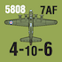
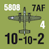
Note that several pairs of US air units and the Commonwealth SEAC air units have the same unit designations, but one of these air units will always be a Long Range Bomber air unit while the other is not. Two air units with the same designation count as one unit for stacking purposes, but not for any other purpose (e.g., there are two US 7th Air Force air units).
The airfield in this hex represents the ability of Allied air units (only) to use this location as an airfield for “landing leg” increment purposes when moving on to another location. At no time may an air or ground unit end its move in this hex. Presence of a Japanese naval unit in this hex during an Offensive temporarily neutralizes this ability.
Ground units have three ways of moving: ground movement, amphibious assault, and strategic movement (ground units may also disengage in response to movement by the other player). A ground unit may use only one type of movement (i.e., ground, amphibious, strategic) during any given Offensive sequence. Mixing movement types during the same Offensive is not permitted. The player moves one unit or one stack of units at a time, and must complete the movement of a stack or single unit before beginning the movement of another.
Ground units may use ground movement to move from a land hex to another land hex across a land hex side expending a variable number of movement points for each hex entered. (8.42)
Additionally, ground units have two ways to move across ocean hex sides. The first is Strategic Ground Transport, which allows amphibious assault capable ground units to move from a friendly coastal hex (with or without a port) to a friendly supply eligible port (8.44). The second is actual amphibious assault, and allows amphibious capable ground units to move from a friendly coastal hex (with or without a port) to any other coastal hex, which can contain enemy ground units (8.45).
A. Japanese ground units may not enter non-coastal Chinese hexes (for example, Japanese land units in hex 2508 [Yungning] cannot move directly to hexes 2408 or 2507 by normal ground movement). Allied units in non-coastal China may not be attacked.
DESIGN NOTE: Only Chinese CBI forces are in the game.
B. Japanese ground units may enter Northern India or Ceylon, but may move no further into India. See the National boundary definitions. Japanese air and naval units may attack Allied units in any portion of India.
C. No ground or air units may enter Soviet territory for any reason. If there is no other choice the unit is permanently removed from play. D. No Allied ground units, except Chinese ground units, may enter non-coastal China hexes.
E. Chinese ground units can only operate in Burma, Northern India, Kunming, and all hexes adjacent to Kunming. Chinese units that are forced to move into any other land hex are eliminated.
A ground unit spends a variable number of movement points to enter a land hex. The movement must be across ground hexsides. A ground unit spends 1 movement point to enter an open terrain hex, 3 movement points to enter a mountain hex, and 2 movement points to enter all other terrain types. A ground unit may not enter a hex if it has insufficient movement points to do so. This means that during low value OC Offensives, ground units may be unable to conduct ground movement.
A unit entering a hex that contains no enemy air or ground units via a transport route (see map key) spends half a movement point. A ground unit during reaction movement may move via a transport route, but may not enter a hex using the transport route movement rate if an enemy ground unit is present. A hex with No Transport Route marker (see 13.77) cannot be moved to or from using the transport route cost.
A ground unit using ground movement must cease movement when it enters a hex containing opposing land or air units or an opposing HQ, but it is not inhibited by the presence of naval units. A ground unit may not exit a declared battle hex and must stop if entering one.
The Reaction player’s ground unit(s) may move from a hex containing an opposing Offensives ground unit(s) that just entered the hex if all of the following conditions apply:
The unit(s) can move to a hex that is not the one from which the opposing unit(s) entered the hex and that contains no opposing units.
The Reaction player’s attack strength in the hex is greater than (not equal to) that of the opposing unit(s) in the hex.
If a successful ground disengagement occurs, the disengaging unit(s) are moved into a valid adjacent hex (regardless of MP cost) and the moving unit may continue to move if it has remaining movement points.
An Amphibious Assault Capable ground unit may move from a coastal hex (with or without a port) to a friendly port a distance equal to the distance a friendly naval unit in the current offensive may move. Since a naval unit can move twice its movement allowance if it moves from a friendly port to a friendly port, a ground unit conducting Strategic Ground Transport that starts its move in a friendly port may also double its movement allowance.
The path of the move may not enter an un-neutralized opposing Aircraft Zone Of Influence and may not end the move in a hex with an enemy unit. The ground unit must finish its movement in a friendly port. A given ground unit may not combine Strategic Ground Transport with other forms of movement in the same offensive. Note that strategic ground transport does not require the use of amphibious shipping points (ASPs).
A port captured using ground movement during the Offensive counts as a friendly port and can be used during the offensive for Strategic Ground Transport. However, a hex entered solely via Amphibious Assault converts to friendly control just prior to post battle movement and is thus unavailable as a destination for Strategic Transport.
DESIGN NOTE: This is an administrative naval movement using slow troop transports, which is why it does not use an ASP.
All Japanese, US, Commonwealth British (except Armor Brigade), Australian, and New Zealand ground units are Amphibious Assault capable. Dutch, Indian, and Chinese units are not and may not use Amphibious Assault or strategic transport.
A ground unit that moves in this manner may move from any coastal hex (with or without a port) to any coastal hex (with or without a port) a distance equal to the distance a naval unit in the current offensive may move. An Amphibious Assault never doubles the distance it may move, even if it enters a friendly port at the conclusion of its move.
An amphibious assault may enter any non-mountain coastal hex (exception: Port Moresby, hex 3823, can be amphibiously assaulted even though it is a mountain hex) whether or not it contains enemy ground units. Note that Event cards that restrict the activation of naval units do not prevent amphibious units from using amphibious assault, and that Inter-service rivalry being in effect does not prevent Army units (Japanese or US) from using amphibious assault movement.
One Amphibious Shipping Point (ASP) is used by each ground unit of division size (XX) or smaller that conducts an Amphibious Assault. Each Corps or Army sized unit (XXX or XXXX) uses one ASP for each step (e.g., a reduced Corps or Army sized unit requires one ASP and a full strength Corps or Army unit requires two ASP).
Exception: The Japanese Korean Army costs two ASP, not 1 ASP, per step (e.g., A full strength Korean Army costs 4 ASP to move by Amphibious Assault).
An amphibious shipping point can be used only once per game turn. Note its use by moving the Amphibious Shipping Used marker on the Strategic Record. If insufficient amphibious shipping points are available, the units for which there are insufficient ASPs cannot conduct Amphibious Assault.
Important: During Reaction no more than one ASP may be used for Reaction movement. This has no effect on Japanese organic transport (8.46), as this type of movement does not use an ASP.
The path taken by the Amphibious Assault ground unit(s) may not enter or exit a hex that currently contains an opposing naval unit (active or inactive), unless the assaulting unit moves with a friendly naval unit escort for its entire length of its movement. An Amphibious Assault unit may not enter or exit a hex within an un-neutralized opposing aircraft Zone Of Influence.
Important: If Amphibious Assault ground unit(s) are without an accompanying friendly naval unit and opposing naval forces of any type end their movement in the battle hex as part of reaction movement, the amphibiously assaulting units are turned back. Each ground unit takes a one step loss and does not take part in the battle in the hex. If there are no units taking part in the battle after this, the battle is considered lost by the offensives player and cancelled. Any amphibiously attacking unit not eliminated must conduct post battle movement from the hex.
PLAY NOTE: Moving an amphibious force with an aircraft carrier unit always neutralizes opposing Aircraft Zones of Influence throughout the move. Additionally, positioning a CV in a position that neutralizes an opposing air Zone Of influence prior to moving the amphibious assault unit allows the Amphibious Assault unit to move through the area.
DESIGN NOTE: Amphibious Assault is the use of specialized naval units to conduct the amphibious invasions that were the hallmark of the Pacific War. The movement through opposing units is very restrictive on purpose. Invasions cannot bypass opposing locations that contain active naval and air forces.
Ground unit Amphibious Assault into an empty enemy controlled hex: A ground unit using amphibious assault into an empty enemy controlled hex may NOT use naval escort, especially carriers to neutralize enemy AZOI, for its entire movement. Subsequent to this amphibious assault friendly naval units may end their movement in or within range of this location to support the invasion (8.21 Example E) against an enemy special reaction (7.27) but note SR exception shown in example whereby a carrier in the hex attacking another location will switch battle hexes due to enemy reaction (7.27 Example).
If at the conclusion of battle resolution containing an amphibious assault, the Offensive amphibious assaulting ground unit(s) are not in a friendly controlled hex (e.g., the assaulting forces lost the air-naval or ground battle), the Offensive amphibious assaulting unit(s) only may conduct post battle movement like a naval unit, but must end their movement in a friendly port or coastal hex. If this is not possible, the Amphibious Assaulting unit(s) are eliminated.
There is a special restriction for US Army ground units. They may only conduct amphibious assault movement into a Japanese controlled and occupied one hex island if they end their movement in a hex containing a US Marine unit that also just completed amphibious assault movement into that hex. In all other circumstances, the presence of a US Marine unit is not required for a US Army unit to conduct Amphibious Assault. Nor are there any restrictions on US Army ground units for amphibious assaults on multi-hex islands or during Reaction.
DESIGN NOTE: Besides Marine units whose raison d’etre is amphibious assault, many Allied army units were trained in this operational art during the war. The US Army restriction maintains the role the US Marines had in late war amphibious invasions, although there were some solely Army invasions during the New Guinea and Philippines campaigns.
The Japanese have five brigade sized land units (1st, 2nd, 3rd, and 4th SN and the SS). These units can conduct 4-6 amphibious assault by either using one amphibious shipping point per unit, or they can conduct amphibious assault by beginning the offensive stacked with and moving their entire move with a CA, CL, or APD naval unit at no cost in amphibious shipping points. Each naval unit of these types, at either reduced or full strength, can move one of these five brigade sized units. If the naval unit is eliminated prior to Ground Combat resolution, the ground unit it was transporting is also eliminated and does not land. If the naval unit loses a step there is no effect on the transported unit.
EXAMPLE: On the December ’41 game turn, the Japanese CA Aoba can enable the South Seas (SS Brigade) detachment to conduct Amphibious Assault by moving as a stack from Truk to Rabaul, New Britain. Units transporting and units to be transported must start the move in the same location.
PLAY NOTE: There are only a handful of naval and ground unit combinations that can conduct this type of move, but it is a useful way to cheaply capture unoccupied opposing bases, especially early in the war.
When the Japanese play the Japanese Barge event, ASP the Japanese flip their ASP marker onto its Barges side and the Barges marker should be placed near the Barges Japanese player. During any Offensive (only, not for a Reaction) that has a 3 OC value card (even if played as an Event), the Japanese can move 1 ground unit of any size as an amphibious assault at the cost of zero ASP, across one all sea hex side as its entire move. This move can initiate a battle, and is treated like any other amphibious assault. If forced to retreat, the Offensives unit uses barge movement to return to its original hex. The Japanese lose this capability or have it superseded for the remainder of the game by the play of the Allied PT Boat event card.
During an offensive or battle, any number of ground units may be stacked in a hex. Stacking is evaluated at the conclusion of any strategy card play whether it was played as an offensive or event. No more than three friendly air and/or ground units (of any size) may be stacked in a hex. If there are overstacked units, the owning player removes the excess units from play, air units first, until the hex is within the stacking limits. If the units were in supply when so removed, they are placed on the game turn record track to be returned to play two turns later as reinforcements (which cannot be delayed). If the overstacked units were out of supply, they are eliminated.
The Allied player can receive the 7th Armor Brigade 回X through the play of an event card. The 7th Armor Bri4-10 gade may not use Amphibious Assault, but may use Strategic Ground transport. The 7th Armor Brigade may not enter Mountain Hexes except via a transportation route or Strategic Ground transport.
Each battle is conducted in two steps: first Air & Naval combat is resolved, and then Ground combat is resolved. There are two separate combat results tables, air/naval and ground. Although both types of combat use similar procedures, they use different die roll modifiers.
All units in the battle hex must participate in that battle. No unit of either player can participate in more than one battle per Offensive.
Activated air and aircraft carrier units can participate in a battle if they are within their air range of the battle hex. An air/carrier unit that is in a battle hex must participate in that battle and cannot participate in another battle that is within its range. If a Reaction player air/carrier unit starts its Reaction in a battle hex and reacts out of the hex, it must still participate in that battle even though it is now not in the battle hex.
Carrier units that did not end their movement in a friendly port hex must either take part in a battle or be assigned to cover an amphibious landing on an empty enemy-controlled hex.
Activated non-aircraft carrier naval units that enter the battle hex add their naval strengths into the total air-naval combat value. Non-aircraft carrier naval units that are not in a battle hex, but in a hex with an aircraft carrier naval unit participating in a battle hex, do not use their combat value in battle resolution, but their presence with the aircraft carriers makes them part of the losses procedure. Aircraft carrier units that are within their air range of the battle hex, including actually residing in the battle hex, always add their combat value to the air-naval combat.
All ground units in a declared battle hex must participate in the ground combat portion of the battle. Offensive ground units that enter a battle hex through amphibious assault only participate in the ground portion of the battle if their side wins the air-naval battle. If the Offensives player loses the air-naval battle (does not affect Reaction ground units) and there is a mix of units that entered the hex through ground movement and amphibious assault, only the ground units that entered by ground movement participate in the ground battle. Reaction ground units that enter a battle hex via amphibious assault participate in the ground portion of the battle regardless of the air-naval battle outcome; exception 8.46 Organic Transport.
Supply has no effect on battle resolution. Its effects are accounted for in the Attrition Phase of the turn and in activation limitations.
DESIGN NOTE: Combat in Empire of the Sun is not intended to be an operational or tactical analysis of air, naval, and ground interactions in the Pacific. The goal is to reward the player for bringing a balanced mix of forces, which, in combination with good intelligence, bring superior firepower to bear, while achieving an historical loss rate. Surface naval units that are stacked with aircraft carriers, but not physically located in the battle hex, reflect escorts, whose defense values protect the carriers, but do not contribute to surface combat, which is why their combat values are not applied offensively. Also, the fact that surface ships in the battle hex can apply their hits to units that are within range of, but not in the battle hex, is an abstraction that reflects a surface action that occurs in the vicinity of the battle hex between those forces. However, as long as carriers are not in the battle hex, it requires the presence of opposing air or carrier units (on a one for one basis) in order for them to take battle damage.
The system will recreate the outcomes from the campaigns fought during the war, but due to the strategic level of play, will give little insight, except at that macro level, into why the outcomes were achieved. Combat tends to be bloody, given the time scale and the attritional nature of much of the conflict that is below the scale of the game, but must be accounted for through this mechanism. It should also be noted that some battles actually represent a series of battles. For example a large naval battle in the Guadalcanal hex could represent all of the losses taken in the Battles of Eastern Solomon, Santa Cruz, and Guadalcanal. A game with more granularity and detail than Empire of the Sun is required for a more cause and effect view of Pacific War combat resolution.
A. Both sides add up their activated air and naval attack strength in the battle hex and add any activated air, CV, CVL, CVE units that are taking part in the battle from outside the hex. The Reaction player also adds in the strengths of any inactive naval and air units that are in the battle hex, even if they remained inactive after reaction activation. In air naval combat, air units that are using their non-parenthetical extended range in battle halve their attack strengths (round up) in combat (at normal range they are full strength, even if they used extended range to move during the offensive). Air units with parenthetical extended range cannot use extended range either to join the battle or to move during an offensive where they take part in battle.
This sum of attack strength is the total attack strength that is modified in the following steps.
DESIGN NOTE: Land based air units that are operating at extended range are using their two engine aircraft only. This reduces their combat potential due to the lack of their shorter ranged fighters and the fact that bomb loads are reduced at longer ranges. LRB units have factored into their combat ratings their basic ineffectiveness against naval units and the fact that the Pacific theater for the most part had sparse infrastructure targets that were not easy to damage with high altitude bombing. The Strategic bombing campaign against Japan is handled as a separate procedure.
Player Note on calculating combat strength: In order to avoid players counting factors, the game system gives equal weight to all factors brought into a battle. The flip side of this is that there are times that you must sum a string of small numbers that add up to a large value, occasionally in excess of one hundred. To avoid the need for having a calculator handy we have created a graphical abacus. There are two US Stars (dark blue and a lighter blue) that can be used in conjunction with the Strategic record track. To use this, designate one counter as a 1s (lighter blue) and another as a 10s (darker blue). Physically move the ones counter one box for each available combat factor, moving the 10 counter one space forward each time ten combat factors have been counted. When you are finished you will have a direct read out of the total number of combat factors. We have also supplied a number matrix to handle the CRT combat multiplier calculation. Between these two techniques a player can make the occasional larger calculation without a calculator. Also feel free to do these mathematical operations in your head, or, should you desire, use a calculator.
B. Roll a die (modifying as appropriate) for each player to determine the combat effectiveness rating. Each player’s total attack strength times effectiveness rating results in the total hits made by the player.
Ambush: Allies +4
Surprise Attack: +3
1943 game turn: +1 for the Allied player if any US air or aircraft carrier units are present.
1944 or 1945 game turn: +3 for the Allied player if any US air or aircraft carrier units are present.
Event Modifier: + any battle modifiers specified by an EC. Note: Some event cards have special battle modifiers.
DESIGN NOTE: Modifiers 3 and 4 reflect the growing technological superiority of US aircraft and improved combat doctrine.
Modified 1D10 Die Roll = Combat Effectiveness Rating
| 0,1,2 | = | One Quarter (.25) (round up if required) |
| 3,4,5 | = | One Half (.5) (round up if required) |
| 6,7,8 | = | One (1) |
| 9 | = | One* (1*) |
| 9 or greater | = | One (1) |
* = If the die roll was a 9 before any required modification, then that side has achieved a critical hit in addition to receiving a one result. See 9.2.F.6.
C. If the intelligence condition was Intercept, both players simultaneously apply a number of hits equal to their combat effectiveness rating times their total air-naval strength.
EXAMPLE: The Allied player has a 12 attack strength CV unit, a 4 attack strength LRB unit, a 10 attack strength air unit at normal range, a 10 attack strength air unit at extended range, and a 16 attack strength BB unit in the battle hex. The Allied strength total would be 47 (12+4+10+5+16). The intelligence condition is intercept, so there is no die roll modifier. On a roll of 2 or less, 12 hits would be assessed against Japanese units, on a die roll of 3-5, 24 hits would be assessed, and on a roll of 6 or greater, 47 hits would be assessed.
D. If the intelligence condition was surprise attack, the Offensives player applies all hits first. Surviving Reaction player units in the battle hex then calculate their combat strength, make a die roll on the CRT, and apply any hits to the Offensives player’s units.
E. If the intelligence condition was ambush (only possible on the play of a reaction card), the Reaction player applies all hits first. Only surviving Offensives player units then calculate a result and apply hits to the Reaction player’s units.
F. How to Apply Hits. The player who rolled the die applies all hits against opposing units. Hits can be applied to units participating in the battle and non-aircraft carrier naval units that are not in a battle hex, but stacked with an aircraft carrier unit that participates in the battle. Hits may be applied in any manner desired within the following restrictions.
PLAY NOTE: The combat system generates hits. The nuances of the combat system are within the conditions for how those hits can be applied. The skill is understanding how to compose your offensives so important elements such as carriers are properly escorted.
HISTORICAL NOTE: The common perception is that the Pacific War was dominated by carrier warfare. At the macro level this is a true statement, but in fact by late 1942 the pre-war carrier forces had hunted each other into virtual extinction. This is why the signature surface battles of the Solomons campaign became the dominant form of naval combat until US shipyards began to turn out an unending stream of Essex class carriers. Players will often see a similar ebb and flow pattern develop regarding their available carrier forces.
1. If a number of hits equal to an opposing unit’s defense strength are applied, the unit is flipped to its reduced side or eliminated if already on its reduced side.
2. All full strength units must be reduced before any units can be eliminated. Units that have only one side are considered to be reduced units. Non-aircraft carrier naval units that are not in a battle hex, but stacked with an aircraft carrier naval unit that participates in the battle, must also be reduced before any reduced strength unit can be eliminated.
3. If there are excess hits and no further units can be hit due to restrictions for applying hits, the remaining hits are lost. Continuing the example from case C above, the 47 attack strength Allied force gets a 6 or greater die roll and applies 47 hits to the Japanese air and naval units. Using the hits available, the Allied player reduces all of the Japanese units except for one full strength unit, which remains with a defense of 18, and the Allied player only has 10 unapplied hits. The Allied player could not eliminate one of the reduced Japanese units because there remains a full strength unit, so the remaining 10 hits are lost.
4. To allocate hits to Air, CV, CVL, and CVE unit that are not in the battle hex containing opposing naval units (they are either outside the battle hex or the battle hex contains no opposing naval units), there must be one friendly Air, CV, CVL, and CVE unit in the battle for each such unit that has hits applied on it. For example, if one side had one air and one CV unit and the opposition had three CV, CVL, or CVE units, and no units are in the battle hex, hits could be applied to only two of the three units. In all cases the side applying the hits chooses which aircraft carrier or air units take the hits. Nonair capable naval units can always be the target of hits generated during an air naval battle.
EXAMPLE: If the Japanese side had one carrier and achieved 45 hits versus an Allied force with two full strength carriers, it is possible that a large number of hits could go unapplied because the inability to reduce one of the two Allied carriers would prevent any reduced strength unit from being eliminated, since there would still be a full strength Allied naval unit present.
The corollary of this condition is if one side has no air or carrier units present and the other does have one or more present, none of the air or carrier units can be damaged if they are not actually in the battle hex with opposing naval units.
5. If a player was the only side with air and/or naval units in the air naval battle, then hits may be applied to any opposing ground units in the hex. If opposing air or naval units were present in the battle, hits can only be applied to air and/or naval units. The last ground step in a hex cannot be eliminated due to air and naval hits; when sufficient hits are generated to eliminate the ground units in a hex, the Reaction player chooses which reduced unit will be the last ground step. However, a hex with intrinsic defense strength is always the last step remaining in a hex. Additional hits that cannot be used are lost.
6. Critical Hit. If a critical hit is achieved (by an unmodified nine die roll or due to an event), the player may circumvent the restriction of case number 2 above, eliminating units while other full strength units remain. Continuing the example above, the Allied player has played the Rochefort card making the intelligence condition an Ambush with a special condition that allows any modified die roll that is nine or greater to be considered a critical hit. The Allied player could apply the 10 unapplied hits to eliminate one of the reduced Japanese units, even though a full strength naval unit remained.
Additionally, any time a player achieves a critical hit, and is mathematically unable to achieve at least a one step loss, then one step loss is assessed to the opposing unit with the lowest defense strength that can receive the hits (in case of ties, Reaction players choice).
DESIGN NOTE: This simulates the ability of the Ambushing force, or a fortuitous opportunity during a battle, to pick off a portion of the opposing force. This is how a Midway like outcome would occur in the game. There are only two Allied cards that enable the Ambush condition, so it is not the normal state of affairs unless you can roll a lot of 9s.
7. Japanese Naval Aircraft Range Advantage. In an air naval battle where the Allied player has not achieved a critical hit and the Japanese player has more than one aircraft carrier unit present, Japanese may transfer one received step loss between carrier units. After all hits have been applied, the Japanese player can reduce one Japanese aircraft carrier or eliminate a reduced Japanese aircraft carrier to recover one step lost by another aircraft carrier (either from reduced to full strength or from eliminated to reduced strength). The number of hits represented by this is irrelevant; this is a one step for one step transfer.
EXAMPLE: Assuming the Allied player had not achieved a critical hit, and the Japanese player had a CV and a CVL naval unit amongst the units that the Allied player had reduced from full to reduced strength, the Japanese player could shift one step lost by the CV onto the CVL, eliminating it and bringing the CV back to full strength.
DESIGN NOTE: This rule is intended to capture two effects. First the Japanese naval aircraft for much of the war out ranged the better armed US naval aircraft. Second Japanese doctrine often had any light carriers in their formation forward of the larger fleet carriers. What is being simulated here are the US pilots hitting the isolated CVL and expending their ordnance without finding the larger fleet carriers.
Comprehensive Offensive Example:
At the beginning of the 1942 scenario the Malaya Peninsula has the Japanse 38th Army in Kuala Lumpur (1913) and the 25th Army (reduced) in Kota Bharu (2112). In support are air and naval forces in French Indo-China (22nd Air Flotilla in Saigon hex 2212 and the BB Kongo and CA Mogami naval units in Cam Ranh (2311).. The Allied player has the 3rd Indian Corps in Kuantan (2014) and the 8th Australian Division, Malaya Air unit and Malaya HQ in Singapore (2015).
The Japanese player opens the 1942 game turn with Japanese card 23: Operation RE, which is played as an EC. The Japanese player can use any HQ to activate units with a logistics value of 3. The Japanese player designates the South HQ in Saigon (2212) as the HQ for the Offensive, so 4 units (log value of 3 + South efficiency rating of 1). The Japanese player activates the 38th army, the 22nd air flotilla, BB Kongo, and CA Mogami naval units. The Japanese
move the 38th army into Kuantan and declare a battle hex. The 22nd air moves from Saigon to Kota Bharu to be within 3 hexes of Singapore and the BB Kongo/CA Mogami naval units move into the Singapore hex and declare another battle hex. The Japanese can declare two battle hexes because card 23 was played as an EC whereas if it was played as an OC only one battle hex could have been declared.
The Allied player now determines what if any reaction will be made. The Japanese Military strategy card did not specify the Intelligence condition as surprise attack, so the Allied player can either make an intelligence die roll to alter the intelligence condition or play a reaction card. Luckily the Allied player is holding Allied card 5: Operation Matador, which is a Reaction counteroffensive card. The Allies play this card and alters the Intelligence condition to intercept. Since this is a counteroffensive card, the Allies can use its logistic value of 3 instead of the Japanese OC value of 2. This allows the Allies to use the Malaya HQ to activate land, air, and naval units.
The Allies activate the 3rd Indian Corps, the 8th Australian Division and the Malaya air unit. The Allies are entitled to activate 4 units also, but there are no other Commonwealth air, naval, or land units within range of the Malaya HQ and so this last activation is lost. The British cannot move the 8th Australian division into the Kuantan hex, because Singapore has already been declared a battle hex. The British Malaya air unit if it had been attacked solely by the BB naval unit could have flown off to strike from afar, but the presence of the Japanese air unit in the battle makes this a moot maneuver, so it stays put. The text condition on Japanese card 23, cannot be fulfilled, so it is ignored, but the Japanese will subtract two from their ground combat die roll due to terrain. The event text on Allied card 5, allow the Allies to add +2 to MA air strength due to the card bonus.
Both sides add up the attack strengths of the surviving air and naval units which contributed attack strength in the battle, active or inactive. Air units that had their attack strengths halved for the battle due to range continue to do so for this calculation. Non-carrier naval units are considered for this calculation only if in the battle hex (for example, a BB naval unit in the battle hex counts, but a BB naval unit that is escorting the distant carriers which also participated in the battle does not, since it did not contribute its attack values for the battle). The side with the higher total is the winner of the air-naval combat. In case of ties the Reaction player wins, except if there are no surviving air or naval units at all.
Special exception: If the Reaction player has one or more surviving air or carrier units present, and the Offensives player has no surviving air or carrier units present, the Reaction player automatically wins the battle, regardless of the attack strengths involved.
DESIGN NOTE: Air power was the critical variable in World War II naval combat. The special exception covers the potential situations, such as Guadalcanal, where even small numbers of air units could prevent powerful surface units from sustained operations in the area.
If no air or naval units survive the battle, then the result is considered an Offensives player victory.
If the Reaction player is the winner, Offensives ground units that entered the hex by Amphibious Assault do not take part in the ground battle and must later conduct post-battle movement out of the hex. Amphibious Assaulting units do not capture the hex in this case even if there are no reaction ground units in the hex. If the hex contains Offensive ground units that entered the hex via ground, not amphibious assault movement, then immediately conduct a ground battle if there are ground units from both sides in the hex. Otherwise there is no ground battle.
If the Offensives player wins and any Offensive ground units remain in the battle hex with Reaction ground units (active or inactive), a ground combat is conducted. If there are ground units from only one side in the hex, that side gains (or maintains) control of the hex and the battle is concluded. If there are no ground units in the hex at all, Reaction player maintains control of the hex and battle is concluded.
DESIGN NOTE: If a side gains air naval supremacy over the battle hex, the amphibious ground forces can engage. If not, it is assumed that amphibious assault forces are turned back as at Coral Sea.
If neither player had any air or naval units present, then the Ground combat occurs, just as if it had been an offensives player air-naval victory.
A. Ground combat is always simultaneous, regardless of the intelligence condition. Both sides add up their activated ground unit attack values plus the attack strengths of any inactive ground units that are in the battle hex and then conduct a combat effectiveness die roll. The basic procedure is similar to Air-Naval combat, but Ground combat uses a different Combat Results Table and has different die roll modifiers.
The player who rolled the die applies all hits against opposing units in any manner within the restrictions on how hits may be applied.
All modifiers are cumulative except for the modifier for Japanese card Col. Tsuji. The bonus modifier of that card is the final modifier for Offensives player roll, regardless of any other modifiers that might apply.
If only the Offensives player has naval units in the battle hex after air-naval combat, then the Offensives player adds +2 to the die roll for shore bombardment.
If after air naval combat the Offensives player is the only player with active air and/or carrier units participating in the ground battle (there are no surviving active or inactive Reaction player air or carrier units) then the Offensives player adds +2 to the die roll for air superiority.
PLAY NOTE: An unopposed offensive carrier unit in the battle hex (e.g., CVE) generates both the shore bombardment and air superiority die roll modifiers for a +4.
JUNGLE: subtract one from the die roll (-1).
MIXED: subtract two from the die roll (-2).
MOUNTAINS: subtract three from the die roll (-3).
Note: There is no modifier for City type terrain.
If the Reaction player had any land or HQ units in a hex prior to the Offensives player conducting an Amphibious assault into that hex, the Reaction player adds +3 to the die roll.
Any Event Modifiers from the ECs played as the current Event for the Offensive and in Reaction to the Offensive and modifiers from the previous play of an Events (for example, Japanese Defense doctrine) are added to any other battle modifiers that are in effect as indicated from above. Note that unlike other EC bonuses, the bonus from Japanese card Col. Tsuji is the final modifier used in the ground battle instead of being cumulative with other modifiers.
If the British 7th Armor Brigade is in the battle the Allies add +1 to their combat die roll for armor superiority.
Modified Die Roll = Combat Effectiveness Rating
Each player applies to the opposing units a number of hits equal to their combat effectiveness rating times their ground strength.
Only ground units can be hit. Non-activated ground units in the battle hex can be hit.
If a number of hits equal to an opposing unit’s defense strength are applied, the unit is flipped to its reduced side or eliminated if already on its reduced side.
Full strength units must be reduced before reduced units can be eliminated.
If there are excess hits that cannot be allocated without breaking other criteria they are lost.
Offensive ground units that conducted amphibious assault to enter the battle hex have their defense strength halved (rounding up if required) for calculating hits.
If, after all hits are applied, only one side has ground units in the hex, that side is the winner. Otherwise, the side that took the most step losses during ground combat retreats during post battle movement. Flipping a ground unit from its full strength to its reduced strength side or the elimination of a reduced unit counts as one step lost. If it is a tie, the Reaction player wins and the Offensives player retreats.
It is possible for both sides to be eliminated in a ground combat. If this happens, the Reaction player maintains control of the hex, but all forces are still eliminated.
DESIGN NOTE: What is being simulated here is that both sides’ units are no longer combat effective and a remnant force remains in the defender’s hex.
DESIGN NOTE: Ground combat is quite bloody given the time scale of the game. If both sides are eliminated, it is not the case that everyone was dead, but that the forces of both sides are no longer combat effective. For the Allies, this means the unit needs to be rebuilt. For the Japanese, this means the unit is usually lost, because the unit in fact fought to the last man. In addition, there were times, especially during the Solomons campaigns, that both sides occupied the same island. For the sake of simplicity, this situation is treated a bit abstractly, given the length of the game turns.
A retreating Offensive ground unit that entered a hex by ground movement must retreat into the hex from which it entered the battle. A retreating Offensive ground unit that has entered a hex by amphibious assault movement conducts post battle movement like a naval unit.
A retreating Reaction ground unit is moved by the Offensives player into an adjacent hex that does not contain Offensives unit, that was not a hex from where an Offensives ground unit entered the battle and where retreating to does not cause an overstack. If possible, the hex has to be a legal named location friendly to the retreating unit; if this is not possible, any legal hex may be selected. If these conditions cannot be met or if the battle-hex is a one-hex island, the Reaction ground unit is eliminated.
Post battle movement is conducted during rule 7.2- Step 13, whether battles were conducted or not. Only activated units that have conducted no form of strategic movement can conduct post battle movement. Movement allowances for air and naval units in post battle movement are equal to those allowances used for the Offensive. Ground units do not conduct post battle movement except to retreat (9.5). The Reaction player conducts post battle movement first, followed by the Offensives player. No form of strategic movement is allowed during post battle movement.
PLAY NOTE: All eligible activated units that did not use strategic transport conduct post battle movement, whether they participated in a battle or not.
Active Reaction player units move and must end their movement in a Reaction player controlled hex (e.g., air units on airfields, naval units in port). The unit must be in supply in the hex and within range of a friendly HQ if possible, but if this is not possible, then any controlled hex is allowed. If no such locations are available the unit(s) are eliminated.
Inactive Reaction player air or naval units that are in enemy-controlled hex after battles conduct emergency movement after Offensives Post Battle Movement (See 8.22, 8.32).
After Reaction Post Battle Movement, all active Offensives air and naval units may conduct Post Battle Movement.
After losing a battle Offensives ground units that used amphibious assault also conduct post battle movement like a naval unit but may not move into or through opposing occupied hexes or opposing non-neutralized air zones of influence. Exception: Due to losses from air naval combat a ground unit that used amphibious assault can find themselves during post battle movement in an unneutralized enemy air ZOI. In this circumstance the ground unit may enter enemy air ZOIs until it enters a hex free of enemy air ZOIs when the normal restriction is once again in effect.
Naval units must end their move in a friendly controlled hex that contains a port. Air units must end their move in a friendly controlled hex that contains an airfield. Any unit that is unable to end its movement in a legal location is eliminated.
Reinforcements arrive according to the reinforcement schedule or due to an Event card. Ground or naval unit reinforcement must be placed in a friendly port hex where the unit is in supply and which is within activation range of an HQ that can activate the unit (6.12). Place an air unit reinforcement in a friendly airfield hex where the unit is in supply and which is within activation range of an HQ that can activate the unit. An HQ arriving as a reinforcement must be placed in a friendly port where it is in supply.
Reinforcement unit may never be placed in an un-neutralized enemy ZOI. HQs arriving as reinforcement on the current turn fulfill the supply and activation requirements for reinforcement placement only in the hex they occupy. To place reinforcements in other hexes, the supply and activation must be traced from an HQ that began the turn on the map.
Allied player places all reinforcements first, and then the Japanese player does so. Placement of a reinforcement cannot alter enemy ZOI to allow other placements in the same segment; however, they may generate new ZOI to restrict enemy placement of units. When placing reinforcements, stacking and placement restrictions may not be violated.
Whenever a Chinese unit needs to be placed as if it were a reinforcement, it can only be placed in Kunming (2407).
If for any reason a reinforcement unit does not have a usable point of entry, the owning player may voluntarily delay the entry of that reinforcement. The unit remains in the Delayed Reinforcement box until it can correctly enter play during a subsequent reinforcement phase. An Allied delayed reinforcement is eligible, each turn it remains in the delay box, to be sent to Europe, and must make the appropriate die roll to determine this.
Allied reinforcements can be delayed due to the War in Europe (WIE) level or an event. If the WIE level is 1 or greater, or if required by Inter-Service Rivalry or an Event Card play, Allied player receives all reinforcements from the Delayed Reinforcement box and all Allied reinforcements for this turn are placed in the delay box. In other cases, Allied player receives all reinforcements from the Delayed Reinforcements box and all reinforcements for the turn to place. EXCEPTION: If the delay is only because of Inter-Service Rivalry, only US Army are placed in the Delayed Reinforcement box; other reinforcements are received normally.
Certain units when being placed in the delay box may be Sent To Europe (See 10.22, 10.24).
US Army ground and air units (but not Marines) plus US CVE (but not CV or CVL) naval units are eligible to be sent to Europe. All other units are exempt from being Sent to Europe.
HQ units and US B29 Air units can never be delayed.
A die roll is made individually for each eligible unit when it is placed in the Delayed Reinforcement box, even if this occurred due to an event. If the Sent to Europe die roll for a unit falls in the indicated range (determined by the current War In Europe level), the reinforcement is placed on the game turn track 3 turns later, to re-enter play as a reinforcement. When a Sent to Europe unit re-enters play as a reinforcement, it is as if it were attempting to enter play for the first time. A unit can be Sent to Europe multiple times per game. The die roll is modified by -1 for Inter-Service Rivalry.
| WIE Level: | Die Roll Result Range |
|---|---|
| None: | No die roll |
| Level 1: | 0-1 |
| Level 2: | 0-3 |
| Level 3: | 0-5 |
| Level 4: | 0-7 |
At the start of each scenario both sides begin with a number of Amphibious Shipping Points (ASPs) as indicated by the scenario. Each ASP can only be used once per turn. Each time an ASP is used, move the owner’s ASP Used marker on the Strategic Record track as a way of recording how many of the available ASPs were used during the current turn. At the start of a new turn, reset the markers to indicate the full level.
The Allied player receives 1 ASP reinforcement per game turn beginning with game turn 2 unless the WIE level is 3 or 4. These reinforcement ASPs permanently increase the level available for subsequent turns. There is no way to reduce the Allied ASP level. The Allies can gain further permanent or temporary ASP additions due to certain event cards (e.g., Edwin Booz: Defense Consultant and Olympic & Coronet respectively).
The Japanese begin each scenario with a pre-determined number of ASPs. They begin the Full Campaign Scenario with 7 ASPs. The Japanese do not receive any permanent reinforcement ASPs during the game. The Japanese can gain additional temporary ASPs through certain card events. The Japanese permanently lose one ASP each time the Allies make a successful submarine warfare attack, in addition to other effects that may occur due to the attack. The Japanese can also lose an ASP due to events. The Japanese can never lose their last ASP for any reason, so once reduced to 1 ASP, they can be reduced no further.
Japanese card 73 has the Barge bonus. If played during the game, this gives the Japanese a limited ability to allow ground units to cross one sea hex side into an adjacent island on a 3 OC play. The Allied play of the PT Boat card cancels the Japanese Barge capability, or, if played before the Japanese play the Barge card, supersedes the ability for the Japanese to play this event later in the game. See rule 8.47.
Purpose: Each side receives replacements in several ways to bring reduced strength units to full strength and to bring eliminated units back into play. One replacement point can bring one eligible reduced unit to full strength or one eligible eliminated unit back into play at reduced strength. An eliminated unit can be brought back into play at full strength for two replacement points.
Procedure: To receive replacements, reduced units already on the map must be supplied and not in an un-neutralized enemy ZOI. Eliminated units returning to the map are placed identically like reinforcements. Thus, HQs that arrived as reinforcement during the reinforcement segment can be used to place units only in their hex. Air and carrier units arriving during the replacement segment cannot neutralize enemy ZOIs to allow other placements during the same segment. However, air and carrier units that arrived during the Reinforcement segment do neutralize enemy ZOIs during the Replacement segment, possibly allowing placement in additional hexes.
Sequence: The Allied player places all replacements first, and then the Japanese player does so. Unless specifically indicated otherwise, all Allied replacements that are not used in the turn of their arrival are lost whereas Japanese air and naval replacements can be saved for future use.
Pre-War units from the Allied and Japanese sides cannot accept replacements (except through an event that explicitly allows it) and consequently when eliminated are permanently removed from play. These units are marked with a single dot on the front and back of their unit counters. If Pre-War units, including HQs, leave the map for any reason they are considered eliminated and cannot return to play.
The Japanese player receives a limited number of naval replacements during the course of the game as indicated on the Replacements Chart. These may be used to either bring reduced naval units to full strength or bring eligible naval units from the eliminated unit pile back into play. Japanese naval unit replacement steps are not lost if not used and may be carried over from game turn to game turn. Keep track of them with the naval replacement marker on Strategic track.
There are no scheduled replacements for Japanese air units. The Japanese player may receive a small number of air replacements through the play of certain events.
There are no scheduled replacements for Japanese ground units. During the replacement segment, the Japanese player may bring up to two replacement steps from China. This is done by reducing the available number of Japanese divisions in China by one or two, which gives one or two ground replacement steps accordingly. These points must be used immediately. If no Japanese divisions in China are available, the Japanese player may not receive ground unit replacements. The available Japanese divisions in China are recorded by moving the marker on the China Divisions track.
Additionally, the play of some Event cards may yield Japanese ground replacements, which the Japanese player must use as required by the card text.
The Allied player receives a specific number of ground replacements as per the Replacement chart. The Allied player receives two ground replacements per game turn, starting with game turn 2. All replacements that cannot be used are lost (they go to Europe). Allied ground replacement may be used for reduced or eliminated US and Commonwealth ground units.
The Allied player receives 5 air replacements per game turn. These can be used for any reduced or eliminated Allied air units that can take replacements. If these replacements are not used during the turn, they are lost (they go to Europe).
The Allied player receives a number of specific naval replacements as per the Replacement chart. If they cannot be used, they are lost. The Allied player gains one or two US naval replacements per turn (except on turn 1) if they control Oahu (5808). Each of these may be used for reduced or eliminated eligible US naval unit. The Allied player gains one Commonwealth naval replacement on game turns 6, 9 and 12, if they control any one of the hexes Colombo (1307), Trincomalee (1308), Singapore (2015), Hong Kong (2709), or Townsville (3727).
If China has not surrendered, the Allied player receives one Chinese replacement on every odd numbered game turn. This Chinese replacement may be used to either bring an eliminated Chinese army back from the eliminated pile at reduced strength into hex 2407 (Kunming) or to bring a reduced strength Chinese army back to full strength. Note that since Kunming cannot be attacked it will always be an available location for returning Chinese army units. A Chinese replacement can be placed in Kunming only if it is available as a supply source (See 13.75). Chinese replacements that cannot be used in the turn they are received are lost. Other replacements may not be used for Chinese units.
There are no replacements for Dutch units. Once a Dutch unit is eliminated it is permanently removed from the game.
Strategic Warfare is all about determining Japanese and Allied Strategy Card hand size. The number of Strategy cards, which represent resources in the game, drawn for each side is determined by conditions on the map and the outcome of Allied Strategic Warfare.
The Japanese player is entitled to draw one Strategy card for each 2 resource hexes under Japanese control (See 6.5 Hex Control), rounding up, at the start of the Strategic Warfare Segment as the base Japanese draw; however, the draw is always at least 4 cards regardless of number of resource hexes. The number of cards drawn can be modified by Strategic Warfare (12.2, 12.3)
The 14 resource hexes are:
For game turns 2 through 4 the Japanese player draws 7 cards per turn to represent pre-existing strategic reserves, regardless of the number of resource hexes controlled. This draw can be reduced due to submarine warfare.
Before the Japanese card draw is made, the Allied player conducts submarine warfare. The Allied player rolls the die and subtracts the game turn number from the die roll. The result is then modified by the factors in 12.22 below. If the modified result is zero or less, the Japanese draw is reduced by one card, but not below 4 cards. In addition, the Japanese player permanently loses one Amphibious Shipping point and has any existing Escort modifier reduced from +4 to +2 or from +2 to zero. However, the Japanese cannot lose their last ASP in this manner and cannot have their Escort modifier reduced below zero.
There are two potential modifiers to the Allied submarine warfare die roll:
Japanese escort events, each of which add two to the submarine warfare die roll (+2).
The Allied player adds one to the die roll (+1) for all 1942 game turns due to defective torpedoes.
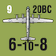
Only US B29 LRB units may conduct Strategic Bombing (the 20th BC arrives on turn 9 and the 21st BC arrives on turn 10). A B29 must be in supply and either in an airfield within its 8 hex range of Tokyo or in the Air units in China box in order to conduct Strategic Bombing. B29 reinforcements cannot be delayed and they may conduct strategic bombing on their turn of entry if they meet all of the appropriate conditions. A B29 returned to play through replacements may not conduct strategic bombing during the turn it was returned from elimination. B29s that conduct Strategic Bombing cannot participate in Battles during Offensives, but may activate in reaction if opposing units enter their hex.
PLAY NOTE: If, through a combination of event cards or military successes, the Japanese player manages to eliminate a B29 unit, it will not be available for strategic bombing the next game turn even if the Allies use air replacements to bring it back into play.
The Allied player rolls a die for each B29 unit that is participating in Strategic Bombing. A full strength B29 successfully strategically bombs Japan on a die roll of 0-8 and fails on a die roll of 9. A reduced strength B29 successfully strategically bombs Japan on a die roll of 0-4 and fails on a die roll of 5-9. Each successful strategic bombing reduces the Japanese Strategy card draw for that game turn by one, but not below 4 cards. An unsuccessful strategic bombing has no effect. When conducting strategic bombing any time a full or reduced strength B29 rolls a 9, the B29 loses one step unless the Allies control an airfield that is within 5 hexes of Tokyo. This hex can be the same hex the B29 is located in (for instance, Iwo Jima, hex 3709). The Japanese High Altitude Interceptors event add 1 to the strategic bombing die rolls until the Allies control a supply eligible airbase within 5 hexes of Tokyo.
There are Allied event cards that reference B29 unit locations that may reduce the Japanese hand during the Offensives phase. These effects are in addition to any Strategic bombing effects. Note: The Japanese can lose at most two cards during Strategic Bombing, but may lose additional cards due to B29 events during the game turn.
If the Japanese receive 6 cards (not including a possible Future Offensive Card) they receive one pass, if they receive 5 (not including a possible Future Offensive Card) or less cards they receive 2 passes. The Japanese cannot receive less than 4 cards during the Strategy draw phase. A pass may be used instead of the play of a card during the Offensives phase. Unused passes are lost at the end of the Offensives phase.
The Allied player base Strategy card draw is 7 cards per turn, except during the first three game turns. On game turn one the Allied player receives no cards. On game turn 2 the Allied player base draw is 5 cards and 2 passes. On game turn 3 the Allied player base draw is 6 cards and 1 pass. Thereafter the Allied player base draw is 7 cards per game turn. The Allied player’s minimum Strategy card draw is 4 cards per turn, even if the conditions would dictate a smaller hand. Allied passes are used in the same way as passes for the Japanese player, and, as with the Japanese player, cannot be accumulated.
The Allied player loses one card draw per turn for each of the following conditions plus gains one pass per card lost (maximum of two passes total):
If China has surrendered.
If India has surrendered.
If Australia has surrendered.
If the War In Europe is at level 4 at the beginning of the game turn.
A nation surrenders if the opposing player controls certain hexes of that nation during the National Status Segment. If Japan surrenders the game is over and the Allied player wins the game. If an Allied nation surrenders, the Japanese player automatically gains control of all of its on map airfields and ports that are not occupied by Allied units unless the specific rules for country’s surrender below specify otherwise. An Allied nation can only surrender once per game. Allies can retake surrendered country by recapturing the locations that the Japanese player had to capture to make the nation surrender. If they do, they regain control of all of that nation’s airfields and ports except for those that have a Japanese unit (of any type) in the hex. However, this does not cancel the card draw effect from surrender.
PLAY NOTE: Surrender markers have been supplied to keep track of which nations have surrendered over the course of the game.
DESIGN NOTE: We have chosen not to burden the map with extensive map boundaries and other means of denoting to which nation each and every island belongs. From a game point of view it is only important to know which ports, airfields, and resource hexes belong to a given nation. Consequently, we have defined many of these boundaries in terms of their distance from some key hex. Most are obvious, but this section of the rules defines them specifically for all game purposes.
The Philippines are defined as all hexes that are contiguous land hexes with Manila (2813) or Davao (2915) or an island hex within 2 hexes of Manila/Corregidor, plus Jolo Island (2715). The key Philippines bases are hexes: 2715, 2812, 2813, 2911, 2915, 3014.
The Philippines surrender when the Japanese player controls Manila (2813) and Davao (2915). Remove all allied ground units in Philippine hexes from play during the National Status Segment. If the unit is eligible for return to the game, such as a US HQ, it can do so through the appropriate reinforcement and HQ rules. Any US air or naval units in Philippine hexes when it surrenders must use an Emergency Air or Naval move to leave Philippines. Any non-US air and naval units are eliminated.
Malaya is defined as all contiguous land hexes within 3 hexes of Singapore (2015). The key bases are: 1912, 1913, 2012, 2014, 2015, 2112.
Malaya surrenders when the Japanese player controls Singapore (2015) and Kuantan (2014). No Allied units are removed from play nor are there hex control changes due to the surrender of Malaya.
Siam has no forces and does not surrender. It is treated as individual hexes.
The Dutch East Indies comprises the Islands of Sumatra (1813, 1914, 1916, 1917,2017), Java (2018, 2019, 2220), Borneo (2216, 2318, 2415, 2517, 2616), Celebes (2620, 2719, 2917), Bali (2320), Amboina (2919), Timor (2721), and Morotai (3017).
DESIGN NOTE: The Dutch East Indies comprises most of the islands surrounding those that are defined above. Since they have no bases they rarely come into play. Consequently we have simplified the definition to what has impact vice geographical correctness.
The Dutch East Indies surrender when the Japanese player controls the seven resource spaces on Sumatra, Borneo, & Java, AND controls Tjilatjap (2019). When the Dutch East Indies surrender, all Dutch units are removed from play during the National Status Segment and the Japanese gain control of all airfields and ports in Dutch East Indies that do not contain US or Commonwealth ground units, HQs alone do not qualify for this purpose. Any Allied air or naval units in hexes gained by Japanese must immediately use air-naval emergency movement to exit Dutch East Indies.
Burma has a border on the map, but for completeness is defined as comprising the bases in hexes: 2006, 2008, 2106, 2206, 2305 and the adjacent jungle hexes without bases.
Burma surrenders when the Japanese control Rangoon (2008), Mandalay (2106), Lashio (2206), AND Mytkiyina (2305). Remove all Commonwealth units that have Burma (B) in their unit designation from play during the National Status Segment. No hexes change control due to Burma surrender.
DESIGN NOTE: India was too large for the Japanese to conquer, but it could be made unstable and taken out of the war due to the Gandhi peace movement and the requirements of garrisoning a very unstable native population, which could defect from Allied offensive operations.
India is defined as having three parts. Northern India consists of Jarhat (2104), Dimasur (2005), Ledo (2205), Dacca (1905), and Imphal-Kohima (2105). Mainland India is composed of all Indian coastal hexes that are not in Northern India or Ceylon. Ceylon consists of all hexes on that island. Japanese units may never enter Mainland India, although Japanese air and naval units may attack Mainland India hexes that are within range. Allied units may enter any hex in India.
The India Status Track consists of 5 boxes that are from right to left: Stable (at start), Unrest, Strikes, Unstable, and Revolts. If the Japanese player controls all hexes of
Northern India, move the India marker from right to left to the next box in the India Status track during the National Status Segment. If the marker is in the India Revolts box during a National Status Segment India surrenders (flip the marker to its surrendered side). Other events may also move the India marker forward; however, they can’t move the marker beyond the India Revolts box and cannot directly cause Indian surrender.
Once India has surrendered the India Status marker never moves from the surrender box. The India Status track marker is returned to the Stable position under one of two conditions.
If during the National Status segment of the Political Phase, the Allied player controls one or more Northern India hex(es).
If during the Offensive segment the Japanese control all of Northern India and in any manner the Allied player regains control of a Northern India hex, immediately move the marker to the India Stable position restarting the surrender sequence.
All Indian Commonwealth units are removed from the game. All other Commonwealth units in Mainland India are either placed on Ceylon or the Maldive Islands (1005), or are permanently removed from the game if all of Ceylon and the Maldive Islands are Japanese controlled. Commonwealth HQs in India are involuntarily repositioned (6.14). US units in India do not have to move although they can by treating them like Commonwealth units. Hexes the units that are moved to must be supply eligible and not within an un-neutralized Japanese aircraft Zone Of Influence. Units that would overstack or have no legal location to move to are permanently removed from play (by the Allied player’s choice).
Control of hexes in Mainland India does not switch to Japanese as a result of India surrendering. Allies can return to Mainland India via Amphibious Assault or ground movement. The Mainland India hexes are not eligible to Japanese Special Reaction nor do the hexes count for Progress of War if re-occupied by Allied units.
Non-Chinese Allied or Japanese units may enter and attack only Chinese coastal hexes. Chinese units may only enter Northern India, Burma, Kunming (hex 2407), and all hexes adjacent to Kunming. The one exception to this is Air Units in China box, which can be entered by Allied air units as per 13.74.
Hong Kong, hex 2709, and the island of Formosa (Taiwan) are not considered to be parts of China.
If the Allies control all Chinese coastal ports and both Korean port hexes, the Japanese can no longer remove Japanese China divisions from China and cannot conduct any further China Offensives (OC or EC, see 13.72).
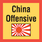
The Japanese player may launch OC and EC China Offensives. EC China offensives are based on the play of a particular event card. A China OC offensive is due to the Japanese player playing any 3OC card and successfully conducting a China OC Card Offensive (13.72A). An OC China offensive can occur no more than once per two turns, but there is no limit to the number of Chinese Offensive Event cards that can be played during any game turn.
The Japanese player can launch a China OC card Offensive during any game turn, but not on consecutive game turns.. A successful Japanese conducted Chinese Offensive moves the China marker one box toward the Government Collapsed box on the track. Unsuccessful Japanese Chinese OC Offensives or the Allied play of a China Offensive event may move the China marker one or more (for some events) boxes on the China track toward Stable Front. However, unless specified by an event, if the China marker would enter the Stable Front box it remains in the Unstable Front box instead
A China OC Card Offensive is resolved by the following procedure:
A. The Japanese player first determines an Offensive Baseline value. To do this, take the number of Japanese Divisions in China (see the specific scenario set up for the starting level of this track) and subtract from this value any Allied Burma Road support as indicated by the marker position on the Burma Road Status track. In addition, add one to the China Offense die roll for each Allied air support unit (see B). The Japanese player then rolls the die. If this die roll is equal to or less than the Offensive Baseline value, move the marker on the Chinese Government Front Status track one box toward or into the Government Collapsed box. On all other results, the marker does not move unless the China Offensive failed and there was at least +1 modifier for Allied air support units, in which case the marker is moved one box towards the Stable Front box, but it the China marker would enter the Stable Front box it remains in the Unstable Front box instead.
B. The Allied player increases the China Offensive die roll by one for each in supply non-LRB air unit in China. Special Exception: If the 14th Air Force LRB is in China box, it increases the China Offensive die roll by one just like a non-LRB unit.
The instant (does not wait for the National Status Segment) during the Offensive segment that the Chinese marker is in the China Collapses box due to a China Offensive or an event, China surrenders. If China surrenders, all Allied air units in China are placed on the game turn track to return as reinforcements in the next game turn. These reinforcements may be delayed. In addition, permanently remove all Chinese units from the game.
DESIGN NOTE: China was always too much for the Japanese to swallow. Surrender in this context means that the Central government has collapsed and the portions not under Japanese control have fallen into the hands of local warlords. The Japanese might have been able to make separate deals with these warlords, while continuing the conflict against the Communists allowing Japan to annex the occupied portions of China.
Up to two Allied air units may be in the Air Units in China box (hereafter called China Box) at any one time, but only one of these air units may be a B29. Allied air units are in supply in the China Box if the Burma Road is open or the HUMP is active and there is a supply eligible airfield in Northern India (regardless of road status). An Allied HQ can activate in-supply air units in the China Box if it can trace an activation path to Kunming or if the HUMP active to any supply eligible friendly controlled airfield in Northern India.
If China has not surrendered and the Burma Road is open, the Allied player may place Allied Air units as reinforcements directly into the China box. Allied air units (including B29s) that are activated during an offensive (to include reaction) can fly from a Northern India supply eligible airfield to the China Box and vice versa. The distance between the China box and any airfield in Northern India is considered one ‘leg’ (8.31) regardless of the air unit’s actual range factor. A B29 unit in China is considered to be in range of Tokyo only for Strategic Bombing (12.3) and Allied Victory purposes (16.2).
If an Allied air unit in the Air Units in China box is out of supply it cannot be activated, does not generate a die roll modifier for a China Offensive, and suffers attrition, but cannot be eliminated due to attrition.
Kunming is a supply source if the Burma Road is open (See 13.78) or the HUMP is active (through the play of Allied event card 17) and there is a supply eligible Northern India airfield. If these conditions are met, any Allied unit is in supply if it can trace an overland (only) 4 or less MP overland supply path directly from Kunming akin to a Supply Eligible port. This is an exception to the normal supply rules where an HQ is required to place a unit in supply. This supply path can be used to activate a unit assuming an activation path also exists. Kunming and all adjacent hexes are considered Allied controlled and occupied for all game purposes.
Chinese Army units can be activated by any Allied HQ in range. Unsupplied Chinese Army units cannot be activated and suffer attrition normally. Chinese units may enter only Northern India, Burma, Kunming (hex 2407), and hexes adjacent to Kunming. If forced to enter a hex in any other nation, Chinese units are eliminated.
Each city hex in Japanese occupied China is considered to contain one intrinsic, 9-12, one step, Japanese ground unit, for each 4 boxes still remaining on the Japanese Divisions in China track. This count is rounded up, so, for example, if there are 5 remaining boxes on the track, there would be two intrinsic units per hex of China. If there are no Japanese divisions left, one unit would still considered to be in the hexes in China. This information is incorporated into the track. These units do not count for stacking purposes and are always the last ones eliminated in the hex, if there are other non-intrinsic units present. These units are considered no longer present in a hex controlled by the Allies, but are not permanently eliminated from the hex, and return to consideration if the hex returns to Japanese control.
NOTE: Hong Kong (hex 2709) begins the 1941 Campaign Scenario as Allied controlled, but once it becomes Japanese controlled or begins a scenario as Japanese controlled it has Japanese intrinsic strength and adheres to all rules in this section.
A. CBI Infrastructure: At the start of the 1941 Campaign Scenario the three hexes Jarhat, Imphal, and Ledo have a marker placed on them denoting that the strategic transportation route printed on the map is not yet constructed. Later scenarios will give instructions on whether these markers are in place or removed to show that the strategic transport route has or has not been constructed.

B. If the Allies control all of Northern India plus Akyab, the Allies can construct one of the three strategic transport routes in Jarhat, Imphal, or Ledo with the complete play of a 3 OC card. The Jarhat strategic transport route must always be constructed by the Allies first and is required to subsequently construct the Ledo or Imphal routes. The Allied player can decide to build the other two strategic transport routes in any order for the cost of a 3OC play each. Construction occurs upon the play of the 3 OC by removing the appropriate marker revealing the strategic transport route printed on the map that is immediately useable for the ½ MP cost for all game purposes. The 3 OC card cannot be used to activate any units. Construction is permanent and cannot be altered for the remainder of the game.
C. Using the same construction procedure, the Japanese player can only construct the Imphal route, never Jarhat or Ledo, if they can trace an LOC from Imphal via strategic transport route to a Japanese controlled Rangoon, provided it is Supply Eligible. Unlike the Allies the Japanese do not require that the Jarhat route have been previously constructed.
The Burma Road is the strategic transport route in Burma Road hexes 2206, 2306, and 2407. The following rules deterNo Hump mine the status of the Burma Road marker on the Burma Road status track. The Burma Road can be in one of three status boxes, Open, Closed/HUMP, Closed/No HUMP each of which as a value that is the Chinese offensive strength modifier. The status on the Burma Road status track determines whether Kunming is a supply source (13.75) and the Chinese offensive strength modifier (13.72).
A. The Burma Road is open if a strategic transport route can be traced from Kunming to Rangoon and then via sea to Madras or by sea to a map edge. The sea portion of the route cannot pass through an unneutralized enemy AZOI.
OR
B. The Burma Road is open if a strategic transport route can be traced from Kunming to Madras, via the constructed Jarhat/Ledo or Jarhat/Imphal routes (13.77).
C. If neither conditions A or B is achieved the Burma Road is closed. Place the Burma Road marker in the appropriate box. Place the Burma Road marker in the Burma Road Closed/ NO HUMP box.
D. If the Allies play card 17: Chinese Airlift, HUMP Operations into China event, the HUMP is active and the Burma Road marker is flipped to its HUMP side for the remainder of the game. If the Burma Road is closed and the marker is on its HUMP side, the Burma Road marker is placed in the Burma Road/HUMP box as long as the Allies control a supply eligible Northern India airfield. If the Allies do not control a supply eligible Northern India airfield and the Burma Road is closed, the Burma Road marker is placed in the Burma Road/ NO HUMP box, but returns to the Burma Road Closed/ HUMP box as soon as this condition can be met.
E. During a Japanese player Chinese OC Offensive, the Allied player subtracts the Burma Road support modifier from the Chinese Offensive baseline value (13.72).
The Bangkok to Rangoon transportation route (also referred to as the Bangkok to Rangoon RR) can only be constructed through the play of the Bridge over the River Kwai card (Japanese card 18) as an event. When activating any Japanese units in Burma, Northern India, Ceylon or any combination thereof, the efficiency value of the activating HQ is modified depending on the status of Japanese logistical network.
If Bridge Over the River Kwai event has not been played and Rangoon is Allied controlled, the efficiency value is modified by -1 (to minimum of 0).
If Bridge Over the River Kwai event has been played AND Rangoon is Japanese controlled with at least one Japanese activating unit tracing a supply line via the Bangkok to Rangoon transportation route, the activating HQs efficiency value is modified by +1.
If neither of the above is true, the efficiency value of the activating HQ is not modified.
The above modifiers are applied if at least one unit activated during the offensive starts in Burma, Northern India, or Ceylon. The modifiers are not applied if all units activated start outside these areas, even if some of the units enter Burma, Northern India, or Ceylon during the offensive.
DESIGN NOTE: Long time players of EotS will note that I have incorporated an earlier supply rule variant directly into the China rules. The small amount of rules overhead adds a great deal of historical realism that I eschewed a decade ago, but at this point I think now needs to be in the core system. Burma was a logistical nightmare and these rules better represent the situation and the engineering struggle that are a large piece of this theater’s history.
Australia has two parts, mainland Australia and the mandates. Mainland Australia consists of all hexes in Australia. The Mandates consist of the following locations and all one hex islands or contiguous land hexes adjacent to them: Admiralty Is. (3820), Kavieng (4020), Rabaul (4021), Bougainville (4222), Guadalcanal (4423).
If all Australian coastal airfields and ports on mainland Australia (not the Mandates) are Japanese controlled during a National Status Segment, then Australia surrenders.
Australia can only surrender once per game. Allied units can regain control of Australian mainland hexes later in the game and use them, but it doesn’t undo the earlier surrender. Any Australian reinforcements that would arrive after Australia surrenders are permanently lost. Australian units already in play remain in play. Reduced Australian units that remain in play may receive replacements, but if eliminated, they are removed from the game.
Whoever controls Rabaul (4021) and Guadalcanal (4423) during National Status Segment gains control of all Mandate hexes that are not occupied by opposing ground units. Any opposing air and naval units in hexes that change control must immediately use emergency air-naval emergency movement to exit. It takes the control of both hexes during a National Status Segment to change control back, recapturing one of the hexes is insufficient.
Whoever controls all the ports plus the resource hex on New Guinea during National Status Segment gains control of all named locations on New Guinea that are not occupied by opposing units.
Japan consists of six parts: Honshu, Hokkaido, Kyushu, Shikoku, Manchuko (hexes 3302 and 3303 plus all adjacent hexes except 3304), Korea (3305 and adjacent hexes), and the Mandates (Formosa, Sakhalin Is, the Kuriles, Okinawa, Iwo Jima, Marcus, the Marianas minus Guam, the Carolines, and the Marshall Islands); see the map boundary. The Japanese Home Islands consist of only Honshu, Hokkaido, Kyushu, and Shikoku. Note: Card text references to Japanese islands means Japanese Home Islands.

Japanese and Allied units of any type may not enter Manchukuo. Manchuko may be conquered by the play of the Soviet Manchurian Offensive card at the appropriate time.
The Marshall Islands are defined as all islands that are within 2 hexes of 4415 Eniwetok and 4715 Kwajalein. If the Allies control these two hexes during the National Surrender phase, then all islands in the Marshall Islands that do not contain Japanese land units become Allied controlled. Any Japanese air or naval units in hexes that change control must immediately use emergency air-naval movement to exit.
Japan surrenders when all hexes on Honshu are Allied controlled or if no ultimate Japanese Supply Source can trace a path of hexes to a Resource hex for three consecutive National Status segments. This path is traced like a supply line. If Japan surrenders, Allied player wins the game immediately.
Each city hex in the Japanese Home Islands, that is Honshu, Hokkaido, Kyushu, and Shikoku, is considered to contain an intrinsic 12-12, one step ground unit with no stacking affect. This step is always the last one eliminated in the hex. Once an Allied control marker is placed in a Japanese hex, this intrinsic ground step is permanently eliminated, even if the Japanese later regain control of the hex.
Both sides experienced inter-service rivalry during the war. When these conditions were present, the coordination of military units and logistics was less effective. To simulate this, certain events create inter-service rivalry, which is denoted by flipping the appropriate Inter-Service rivalry marker to its Inter-Service rivalry side on the map. When an Event card (or one year scenario special rule 17.26, 17.37, and 17.47) ends Inter-Service Rivalry, flip the appropriate marker to its Strategic Agreement side to designate this condition.
If US Inter-Service rivalry is in effect the following conditions prevail:
A. All US Army/Air Corps (not Allied or US Marine/Navy) reinforcements are automatically delayed.
B. All WIE diverted to Europe die rolls have 1 subtracted from them.
C. An HQ cannot activate both US Army units and US Navy units during the same offensive or in reaction to the same offensive. Only US Army units OR US Navy units may be activated in this case, but other Allied units are not restricted. US Army ground units may use Amphibious Assault during inter-service rivalry. Naval escort can occur due to card text or if a Joint HQ activates a non-US naval unit.
If Japanese Inter-Service rivalry is in effect the following conditions prevail:
A. An HQ cannot activate both army and navy units in the same offensive or in reaction to the same offensive.
B. The Japanese can only use one half (round up) of their total amphibious shipping points while this condition persists.
The War In Europe (WIE) level is denoted by the WIE track. The current WIE status is either No Effect or a level from 1 to 4, based on the location of the WIE marker on the track. War In Europe Event cards increase (Allied) or decrease (Japanese) the WIE level. Different levels of WIE have varying game effects as follows.
No Effect: Level of +1 to +3
No impact on play.
Level 1: WIE Level of 0 to -2
A. Allied reinforcements delayed.
B. US Sent to Europe range is 0-1.
Level 2: WIE Level of -3 to -4
A. Allied reinforcements delayed.
B. US Sent to Europe range is 0-3.
Level 3: WIE Level of -5 to -6
A. Allied reinforcements delayed.
B. US Sent to Europe range is 0-5.
C. Allies lose their Amphibious Shipping point reinforcement.
Level 4: WIE Level of -7
A. Allied reinforcements delayed.
B. US Sent to Europe range is 0-7.
C. Allies lose their Amphibious Shipping point reinforcement.
D. Allies draw one less card (see 12.52 D).
Die rolls that are less than zero are treated as zero. Die rolls that are greater than nine are treated as a modified nine.
The WIE level may never increase beyond +3 or decrease beyond -7. Actions that would exceed these limits are ignored and do not accumulate.
These victory conditions apply to the Full Campaign Scenario (17.1), the Shortened Campaign Scenario (17.8) and the Even Shorter Campaign Scenario (17.9). The other seven scenarios covering shorter periods during the war (17.2 - 17.7) have their own victory conditions detailed individually.
If Japan surrenders due to conquest of Honshu or blockade of Home Islands (13.93) the game immediately ends and the Allied player wins. If during any End Of Turn Phase, the US Political Will marker is in the Negotiations Box (Zero), the game ends and the Japanese player wins. If none of these conditions occur, then there is no automatic victory, and the winner is determined at the conclusion of game turn 12 by the following conditions.
The Allied player wins if, during the game turn 12 End Of Turn Phase, Japan has been successfully strategically bombed on four consecutive turns, has 1 or zero resource hexes, and a B29 is in range of Tokyo, or Japan has surrendered.
DESIGN NOTE: The most difficult part of this design was how to determine Allied victory, while still making the game interesting for the Japanese player. There was never a chance that Japan could “win” the war. Their strategy, and the best they could have hoped for, was that the US would negotiate a settlement of less than unconditional surrender. In addition, I needed to force the historical mindset on the Allied player that an invasion of Japan had to be contemplated and planned for, especially since most wartime personages were unaware of the Manhattan project until the A-bomb was ready for operational use. Consequently, to make a contest of it, the Allied player must perform a bit better than was achieved historically by the conclusion of the war or the Allies must carry out the invasion of the home islands. The notion here is that, if a variety of factors associated with the Japanese decision to surrender were delayed, other paths may have been chosen. So, if the Allies have to invade Japan to win the game, it is because the Manhattan project was delayed, the Soviets failed to invade Manchuria, or the Allies were unable to destroy Japanese industry due to a later starting B29 campaign. If the Allies do not complete the surrender of Japan through invasion, it is assumed that the high casualty cost causes a move to negotiate an end to hostilities, resulting in a pyrrhic Japanese victory.
If the Allied player does not win by the conclusion of game turn 12, the Japanese player wins.
The US Political Will marker moves due to the play of an event or during the National Status Segment when the following conditions occur.
Australia: Reduce US Political Will by 2.*
Burma: Reduce US Political Will by 1.*
China: Reduce US Political Will by 2.
Dutch East Indies: Reduce US Political Will by 1.*
India: Reduce US Political Will by 2.
Malaya: Reduce US Political Will by 1.*
Philippines: Reduce US Political Will by 1.*
All Allied nations on this list have surrendered: Reduce US Political Will by 2.* = If this Allied Nation has surrendered to the Japanese and is subsequently recaptured by the Allies, US Political Will is increased by the value lost when this Nation originally surrendered. For example if the Allies recapture Malaya the US Political Will is increased by 1.
Any other locations that are not mentioned above have no impact on US Political Will when they surrender.
Alaska is considered occupied if a Japanese unit has continuously occupied any single hex in Aleutian Islands (Hexes 4600-5100) at the end of any third consecutive US Political Will Segment: Reduce US Political Will by 1. This result can be earned only one time per game.
Hawaii is considered occupied if a Japanese unit has continuously occupied any hex in the major Hawaiian Islands (Hexes 5708, 5808, 5908) or Midway (5108) at the end of second consecutive US Political Will Segments: Reduce US Political Will by 1. This result also can be earned only one time per game.
A. If the Japanese control 3 or less Resource hexes during any game turn between turn 5 and 12, increase US Political Will by 3. This can occur only once per game.
B. If US Strategic Bombing roll result indicates reduction of the Japanese card draw by one or more cards, shift the US Political Will marker 1 to the Right, even if the Japanese card draw cannot be reduced further due to already being at minimum. This can occur no more than once per game turn.
A. Operation Z: Pearl Harbor Attack Event: The play of this card increases US Political Will by 8.
B. Other Event cards increase or decrease US Political Will as per the event text.
If, as a result of a combat when the Allies are the Offensives player, the entire attacking force in a ground battle is eliminated and at least one of the ground units was a US land unit of division or corps size (XX or XXX) that can receive replacements, the Allied player automatically loses 1 Political Will point, moving the marker one box to the left. No PW losses are taken for Allied units other than US units. The Allies cannot lose more than one Political Will point per game turn due to this condition.
If at the end of any game turn there are no US carrier units on the map, the Allied player loses 1 US political will point, moving the marker one box to the left. The Allied player loses an additional US political will point if there are no US naval units of any type on the map.
From game turn 4 until the end of the game, the Allies have a requirement for capturing and holding until the Political Will segment of the turn a certain number of hexes that began the turn under Japanese control. The required number of hexes is 4 or the number of ASPs available at the conclusion of the reinforcement phase, whichever is smaller.
To count as a required hex for this purpose, the hex has to contain a named location, Resource, port, or airfield. If Allies fail to capture the required number of hexes during the turn, they lose 1 political will point. The capture of Allied controlled hexes has no impact on this calculation, except the re-capture of hexes that began the turn as Japanese controlled hexes. One hex islands that do not contain a resource, port, or airfield do not count for progress of the war purposes (e.g., Attu/Kiska). Hexes captured due to National Surrender do count for calculating the Allied total of captured hexes.
EXAMPLE: On game turn 4 the Allies have 3 ASPs at the conclusion of the Reinforcement phase. Therefore 3 is the number of Japanese hexes that must be captured. During the turn the Allies capture 5 Japanese controlled hexes and the Japanese re-capture 3 of those hexes for a net difference of 2 hexes captured and retained, which is less than the required 3 so US Political Will is reduced by one. Changes in national status that alter the control of a group of hexes count for the Allies toward achieving their goal.
Although the full campaign scenario is designed for the ultimate EOTS playing experience, it will often be a bit lengthy for the time constraints of a tournament situation. The yearly scenarios (1942, 1943, and 1944) were designed with tournament play in mind. It should take two players well versed in the rules approximately 3 hours to play a year scenario, although it will take longer when you are learning the system.
The year scenarios were designed to be as balanced as possible, but play style is a hard thing to define and it is often the case that a player favors one side or another in a tournament situation. It is suggested that players use the bidding system to determine sides in a tournament situation.
Players bid victory points to determine which side they will play. After the pieces are set up, both players write down on a piece of paper a number of victory points that they are bidding to play a particular side. A player can choose either side and can bid any number of victory points they desire. A player must pick a side, but is allowed to bid zero victory points. There are two possible outcomes: both players pick the same side or each player picks a different side.
EXAMPLE: If Mark bids 1 VP to play the Japanese and Grant bids 0 VPs to play the Japanese, Mark gets the Japanese and subtracts 1VP from his VP total at the end of the scenario. If, on the other hand, both Mark and Grant bid for the Allied side, and the winning bid was 2 VPs, then the player with the Japanese would have 2 VPs added to his total at the end of the scenario.
EXAMPLE: If Mark bids 2 VPs to play the Japanese and Grant bids 3 VPs to play the Allies, each player gets the side they bid, but Mark (the Japanese player) adds 1VP to his total at the end of the scenario, however, if Mark had bid 3 VPs to play the Japanese and Grant bid 2 VPs to play the Allies, then Mark (still as the Japanese player) would subtract 1VP from his total at the end of the scenario.
PLAYER NOTE: Playtesting results indicate that a bid of higher than 3 victory points for any side is probably excessive.
Players bid US Political Will boxes to determine which side they will play. After the pieces are set up, both players write down on a piece of paper a number of US Political Will boxes that they are bidding to play a particular side. A player can choose either side and can bid any number of US Political Will boxes they desire. A player must pick a side, but is allowed to bid zero US Political Will boxes. There are two possible outcomes: both players pick the same side or each player picks a different side.
If both players pick the same side, the player who bid more US Political Will boxes gets to play that side. If the winning player is playing the Japanese side, the US Political Will bid is added to the US Political Will total at the conclusion of Operation Z when the US Political Will is normally set at +8. If the winning player is playing the Allied side, the bid amount is subtracted from the US Political Will total at the conclusion of Operation Z.
If both players pick different sides, the net difference of US Political Will bids are added or subtracted from the initial US Political Will total of +8 at the conclusion of Operation Z.
DESIGN NOTE: The 1942 campaign scenario and the yearly scenarios were intended as the main format for tournament play.
See the full PDF for the scenarios
See the full PDF for the master scenario setup list
See the full PDF for the example of play
See the full PDF for the designer notes
See the full PDF for the bibliography
GAME DESIGNER: Mark Herman
GAME DEVELOPER (2005) : Stephen Newberg
GAME DEVELOPER (2014 Reprint) : Mark Herman
GAME DEVELOPER (2018 reprint)/ERASMUS V2.0: Francisco Colmenares GAME DEVELOPER (2021 & 2025 Reprints): Mark Herman
CDSS v2: Chris Crane
ART DIRECTOR: Rodger MacGowan
BOX ART AND PACKAGE DESIGN: Rodger MacGowan
GAME MAP: Mark Simonitch
COUNTERS: Mark Simonitch and Dave Lawrence
PLAY TEST COORDINATOR: Andy Lewis
2nd Edition Rules Editing: Robert Ryer
3rd Edition Rules: Antero Kuusi
3rd Edition Rules Editing Team: Mark Popofsky, Tom Thornsen, Joel Tamburo, John Steidl, Francisco Colmenares, Craig Yope
PLAY TEST TEAM LEADERS: Stan Buck, Tom Cannon, Dave Casper, Don Chappell, Andy Daglish, Eric Feifer, Ricky Gray, Mark Herman, Stephen Newberg, James Pei, Peter Rich, Alan Snider, Bill Thoet & Arrigo Velicogna
Special Thanks to all of the members of the Empire of the Sun topic on Consimworld who have contributed to these rules with their thoughtful questions and suggestions.
PRODUCTION COORDINATION: Tony Curtis
PRODUCTION COORDINATION (2025): Kai Jensen
PRODUCERS: Tony Curtis, Rodger MacGowan, Andy Lewis, Gene Billingsley and Mark Simonitch